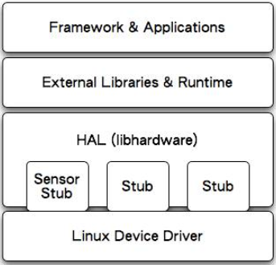

操作系统
Table of Contents
List of Tables
1 brief
1.1 进程
一个进程代表一个任务，多进程也就是多任务，一个进程包含运行所需的资源，包含 运行代码，内存空间，栈空间，外设资源等。在Windows中一个应用程序就是一个进程。
1.2 线程
在一定程度上进程的原理和线程一样。每个进程都有一个PCB块记录进程的各种资源信
息，线程一般也有。线程是进程的功能子集，一个进程可以包含多个线程，多个线程
协作完成进程的任务，一般线程所需资源有代码和栈空间，其中栈空间用于记录线程
切换时自己的上下文，所以比起进程概念比较"轻"，CPU在上下文切换时更快捷方便.
一般的嵌入式操作系统实现的是单进程下多线程，用一个上下文调度器进行线程切换。
如果要实现多进程，估计需要多个调度器，多个调度器再协作，或者在一个调度器中
控制多个进程的资源和代码以及线程功能（个人猜想）。
1.3 信号量
信号量用于记录临界资源的个数，当多个线程试图访问这些资源时，每访问一个资源
信号量减1，也就是传说中的P操作，每访问完一个资源，将释放信号量加1，也就是传
说中的V操作，当信号量减为1时，这个资源变成临界区资源，如果信号量减为0后，新
申请资源的线程将被挂起。
信号量实现的一种简单方式，就是设置1个整数变量和指向资源的指针的结构体，在线
程访问这个变量时，关闭所有的中断和异常，然后对变量进行加1或者减1，实现信号
量的访问。
2 linux
2.1 shell
2.1.1 grep
- 用法：grep [-acinv] [–color=auto] '搜索关键词' filename
- -a，将 binary 文件以 text 文件的方式搜寻数据;
- -c，计算找到 '搜寻字符串' 的次数;
- -i，忽略大小写的不同，所以大小写视为相同;
- -n，顺便输出行号;
- -v，反向选择，亦即显示出没有 '搜寻字符串' 内容的那一行;
- –color=auto，可以将找到的关键词部分加上颜色的显示喔！
- 用例：
在当前目录下找到所有文件中包含关键字Scd的行
cat * | grep -n Scd
2.1.2 find
- 用法：过于复杂；
- 用例：
在当前目录下找到所有（包括子目录）文件名后缀是".c", ".h"的文件名路径并 输出到文件cscope.files
find . -name "*.[ch]" >cscope.files
3 android
3.1 base
上下文context
- getApplicationContext():生命周期是整个应用，应用摧毁，它才摧毁。
- this:代表当前,在Activity当中就是代表当前的Activity，换句话说就是 Activity.this在Activity当中可以缩写为this.
- getApplication():andorid 开发中共享全局数据;
我们在平时的开发中，有时候可能会需要一些全局数据，来让应用中得所有 Activity和View都能访问到，大家在遇到这种情况时，可能首先会想到自己定义一 个类，然后创建很多静态成员，不过andorid已经为我们提供了这种情况的解决方案： 在Android中，有一个名为Application的类，我们可以在Activity中使用 getApplication()，方法来获得，它是代表我们的应用程序的类，使用它可以获得 当前应用的主题，资源文件中的内容等，这个类更灵活的一个特性就是可以被我们 继承，来添加我们自己的全局属性。
判断当前Activity
ActivityManager am = (ActivityManager) getSystemService(ACTIVITY_SERVICE); ComponentName cn = am.getRunningTasks(1).get(0).topActivity; Log.d(TAG, "pkg:"+cn.getPackageName());//显示当前activity所在路径 Log.d(TAG, "cls:"+cn.getClassName());//路径+类名 Log.d(TAG, MyActivity.class.getName()); //路径+类名 Log.d(TAG, MyActivity.class.getSimpleName()); //类名
3.1.1 Bundle
android中的Bundle一般用于携带数据，类似于Map，用于存放key-value键值对，其提 供了各种putXx()和getXx()方法，putXx()用于往Bundle对象中放入数据，getXx()用 于从Bundle对象中获取数据。比如Bundle常用与组件之间进行数据传输，我们可以将 Bundle设置好数据后，利用Intent的putExtras()方法将Bundle捆绑到Intent中，然后 再传递给别的组件；
3.1.2 Intent
Intent可以用于启动别的组件比如Activity和Service等，并在Intent中绑定一定的数 据，传递给目标组件。
3.1.3 系统时间
获取年月日
import java.text.SimpleDateFormat; SimpleDateFormat formatter = new SimpleDateFormat("yyyy年MM月dd日HH:mm:ss"); Date curDate = new Date(System.currentTimeMillis());//获取当前时间 String str = formatter.format(curDate);
获取当前的年月时分
SimpleDateFormat sDateFormat = new SimpleDateFormat("yyyy-MM-dd hh:mm:ss"); String date = sDateFormat.format(new java.util.Date());
获取当前的年月
SimpleDateFormat sdf=new SimpleDateFormat("yyyy-MM"); String date=sdf.format(new java.util.Date());
获取指定时区的时间
df = DateFormat.getDateTimeInstance(DateFormat.FULL,DateFormat.FULL,Locale.CHINA); System.out.println(df.format(new Date()));
确定系统时间制式
ContentResolver cv = this.getContentResolver(); String strTimeFormat = android.provider.Settings.System.getString(cv, android.provider.Settings.System.TIME_12_24); if(strTimeFormat.equals("24")){ Log.i("activity","24"); }
取得系统时间日期
Calendar c = Calendar.getInstance(); year = c.get(Calendar.YEAR) /*取得系统日期*/ month = c.grt(Calendar.MONTH) day = c.get(Calendar.DAY_OF_MONTH) hour = c.get(Calendar.HOUR_OF_DAY);/*取得系统时间*/ minute = c.get(Calendar.MINUTE)
利用TIMER获取
Time t=new Time(); // or Time t=new Time("GMT+8"); 加上Time Zone资料。 t.setToNow(); // 取得系统时间。 int year = t.year; int month = t.month; int date = t.monthDay; int hour = t.hour; // 0-23 int minute = t.minute; int second = t.second;
3.2 activity
3.2.1 Fragment
Android运行在各种各样的设备中，有小屏幕的手机，超大屏的平板甚至电视。针对屏 幕尺寸的差距，很多情况下，都是先针对手机开发一套App，然后拷贝一份，修改布局 以适应平板神马超级大屏的。难道无法做到一个App可以同时适应手机和平板么，当然 了，必须有啊。Fragment的出现就是为了解决这样的问题。你可以把Fragment当成 Activity的一个界面的一个组成部分，甚至Activity的界面可以完全有不同的 Fragment组成，更帅气的是Fragment拥有自己的生命周期和接收、处理用户的事件， 这样就不必在Activity写一堆控件的事件处理的代码了。更为重要的是，你可以动态 的添加、替换和移除某个Fragment; Fragment必须是依存与Activity而存在的，因此 Activity的生命周期会直接影响到Fragment的生命周期, Fragment的生命周期见图 \ref{img-fragment-cycle};

3.2.2 button
- button透明：xml中使用android:background="@android:color/transparent"
3.2.3 下拉菜单
实现某个菜单框里面有多个选项，点击后可以展示各个字符菜单项，点击后可以产生 点击事件，可以将某个int值和字符菜单项对应；实现方法：
定义两个array资源：
//字符菜单项 <string-array name="gps_type_options"> <item>GPS</item> <item>GPS and GLONASS</item> <item>GPS and BEIDOU</item> </string-array>
//int对应值 <integer-array name="gps_type_values"> <item>0</item> <item>1</item> <item>2</item> </integer-array>
xml中定义器件
<Spinner android:id="@+id/spinnerType" android:layout_width="0dip" android:layout_height="wrap_content" android:layout_marginRight="8dip" android:layout_weight="1" />在源文件中获取这2个资源：
String[] gpsTypeOptions = getResources().getStringArray(R.array.gps_type_options); int[] gpsTypeValues = getResources().getIntArray(R.array.gps_type_values);
绑定两者成adapter:
private IntArrayAdapter mGPSTypeAdapter; mGPSTypeAdapter = new IntArrayAdapter(this, gpsTypeOptions, gpsTypeValues);
将adapter装配到view上：
private Spinner mSpinnerType; mSpinnerType = (Spinner) findViewById(R.id.spinnerType); mSpinnerType.setAdapter(mGPSTypeAdapter); mSpinnerType.setOnItemSelectedListener(onItemSelectedListener);
实现点击事件：
private OnItemSelectedListener onItemSelectedListener = new OnItemSelectedListener() { @Override public void onItemSelected(AdapterView<?> adapter,View view,int position,long id) { if (adapter == mSpinnerType) { mGPSTypePostion = position; } } @Override public void onNothingSelected(AdapterView<?> arg0) {} };
3.2.4 复选框
正方形的复选框选项
xml中定义器件
<CheckBox android:id="@+id/cb" android:layout_width="wrap_content" android:layout_height="wrap_content" android:checked="false" android:text="已婚" />
源码中获取器件
private CheckBox mCheckKeep; mCheckKeep = (CheckBox) findViewById(R.id.checkKeep);
监听事件
//绑定监听器 cb.setOnCheckedChangeListener(new OnCheckedChangeListener() { @Override public void onCheckedChanged(CompoundButton arg0, boolean arg1) { Toast.makeText(MyActivity.this, arg1?"选中了":"取消了选中" , Toast.LENGTH_LONG).show(); } });
也可以查询获得结果
if(!cb.isChecked()){ }
3.2.5 单选框
单选框可以将多个选项汇聚到一个组中，这个组中的每个单选项是互斥的，选一个其 他的就不能选。
xml文件
<RadioGroup android:id="@+id/shoes_sel" android:layout_width="wrap_content" android:layout_height="wrap_content" android:layout_x="3px" android:layout_y="54px" > <RadioButton android:id="@+id/RadioButton1" android:layout_width="wrap_content" android:layout_height="wrap_content" android:text="工厂测试"/> <RadioButton android:id="@+id/RadioButton2" android:layout_width="wrap_content" android:layout_height="wrap_content" android:text="生产测试"/> </RadioGroup>
源码中获取：
mRadioGroup = (RadioGroup) findViewById(R.id.shoes_sel); mRadio1 = (RadioButton) findViewById(R.id.RadioButton1); mRadio2 = (RadioButton) findViewById(R.id.RadioButton2);
监听器：
mRadioGroup.setOnCheckedChangeListener(new RadioGroup.OnCheckedChangeListener() { public void onCheckedChanged(RadioGroup group, int checkedId){ if (checkedId == mRadio2.getId()){ //todo } else{ //todo } } });
3.2.6 对话框
比如可以在某个按键后触发一个对话框出来要求用户输入数据，然后点确定等操作。 Java代码如下
final AlertDialog dialog = new AlertDialog.Builder(this).create();//对话框对象 //向系统请求一个inflater LayoutInflater inflater = (LayoutInflater) this.getSystemService(MainActivity.this.LAYOUT_INFLATER_SERVICE); //该对话框的布局layout LinearLayout layout = (LinearLayout)inflater.inflate(R.layout.dialog, null); dialog.setView(layout); dialog.getWindow().setWindowAnimations(R.style.DialogAnimationStyle); dialog.show(); //获取对话框中的控件元素，和普通的界面操作一样 final EditText et = (EditText) dialog.getWindow().findViewById(R.id.et_value); Button close_bt = (Button)dialog.getWindow().findViewById(R.id.close_bt); close_bt.setOnClickListener(new OnClickListener() { public void onClick(View v) { dialog.dismiss(); } }); Button sure_bt = (Button) dialog.getWindow().findViewById(R.id.sure_bt); sure_bt.setOnClickListener(new OnClickListener() { public void onClick(View v) { String string =et.getText().toString(); if(string == null) dialog.dismiss(); Calibrate = currentPressure - Float.parseFloat(string); dialog.dismiss(); } });
相关的界面布局xml文件
<?xml version="1.0" encoding="utf-8"?> <LinearLayout xmlns:android="http://schemas.android.com/apk/res/android" android:layout_width="300dip" android:layout_height="wrap_content" android:background="#ffffff" android:orientation="vertical" > <TextView android:id="@+id/textView1" android:layout_width="wrap_content" android:layout_height="wrap_content" android:layout_marginTop="10dip" android:layout_marginLeft="10dip" android:textSize="20dip" android:text="校正" /> <View android:layout_width="match_parent" android:layout_height="1dip" android:layout_marginTop="10dip" android:background="#009acd" /> <LinearLayout android:layout_width="match_parent" android:layout_height="wrap_content" android:layout_marginTop="20dip" > <TextView android:layout_width="100dip" android:layout_height="wrap_content" android:textSize="15dip" android:gravity="center_horizontal" android:text="当前值" /> <TextView android:id="@+id/textView3" android:layout_width="wrap_content" android:layout_height="wrap_content" android:text="TextView" /> </LinearLayout> <LinearLayout android:layout_width="match_parent" android:layout_height="wrap_content" android:layout_marginTop="20dip"> <TextView android:id="@+id/textView2" android:layout_width="100dip" android:layout_height="wrap_content" android:gravity="center_horizontal" android:textSize="15dip" android:text="校正值" /> <EditText android:id="@+id/et_value" android:layout_width="200dip" android:layout_height="wrap_content" android:background="#fff0f5" android:numeric="integer" android:text="" /> </LinearLayout> <View android:layout_width="wrap_content" android:layout_height="1dip" android:layout_marginTop="20dip" android:background="@color/darkgray"> <LinearLayout android:layout_width="match_parent" android:layout_height="45dp" > <Button android:id="@+id/close_bt" android:layout_width="wrap_content" android:layout_height="wrap_content" android:background="@drawable/bt_style" android:layout_weight="1" android:text="取消" /> <View android:layout_width="1dip" android:layout_height="wrap_content" android:background="@color/darkgray"/> <Button android:id="@+id/sure_bt" android:layout_width="wrap_content" android:layout_height="wrap_content" android:background="@drawable/bt_style" android:layout_weight="1" android:text="确定" /> </LinearLayout> </LinearLayout>
3.3 service
在service中启动activity：
Intent intent = new Intent(getBaseContext(), MtkPlatformTest.class); intent.addFlags(Intent.FLAG_ACTIVITY_NEW_TASK);必须加这句 startActivity(intent);
3.3.1 Bound Service
要做绑定服务操作，client需要调用bindService() , 调用后，系统将调用server的onBind()方法，这个方法将返回一个IBinder，这个 IBinder正是反给client，client使用此IBinder来调用server实现的各种服务接口，client要取得这个IBinder，需要实现一个接口 ServiceConnection 作为bindService的参数，此ServiceConnection中的方法onServiceConnected将被系统回调(在onBind执行完后)，而 onBind返回的IBinder正是作为参数传给onServiceConnected，这样client就可以在onServiceConnected里面获得该IBinder；
3.4 broadcast
广播机制可以事务处理异步化，可以将事务的处理放在别的地方，然后在另一个地方 发送一个Intent，系统会根据此Intent来找到相应的广播处理方法来处理，步骤如下。
设定IntentFilter，可以在manifest文件中设置，也可以在源码中动态设置，实例 如下;
private static IntentFilter makeIntentFilter() { final IntentFilter intentFilter = new IntentFilter(); intentFilter.addAction(ACTION_GATT_CONNECTED); intentFilter.addAction(ACTION_GATT_DISCONNECTED); intentFilter.addAction(ACTION_GATT_SERVICES_DISCOVERED); intentFilter.addAction(ACTION_DATA_AVAILABLE); return intentFilter; }
设置广播事务处理，实例如下;
private final BroadcastReceiver mReceiver = new BroadcastReceiver() { @Override public void onReceive(Context context, Intent intent) { final String action = intent.getAction(); if (ACTION_GATT_CONNECTED.equals(action)) { //... } else if (ACTION_GATT_DISCONNECTED.equals(action)) { //... } else if (ACTION_GATT_SERVICES_DISCOVERED.equals(action)) { //... } else if (ACTION_DATA_AVAILABLE.equals(action)) { //... } } };
注册，将action和事务处理相结合，实例如下;
registerReceiver(mReceiver, makeIntentFilter());
产生事件源，在别的地方发送消息，实例如下;
private void broadcastUpdate(final String action) { final Intent intent = new Intent(action); sendBroadcast(intent); }
3.5 消息机制
Android应用程序是通过消息来驱动的，系统为每一个应用程序维护一个消息队例，应 用程序的主线程不断地从这个消息队例中获取消息(Looper)，然后对这些消息进行处 理(Handler)，这样就实现了通过消息来驱动应用程序的执行.
- Message：消息，其中包含了消息ID，消息处理对象以及处理的数据等，由 MessageQueue统一列队，终由Handler处理。
- Handler：处理者，负责Message的发送及处理。使用Handler时，需要实现 handleMessage(Message msg)方法来对特定的Message进行处理，例如更新UI等。
- MessageQueue：消息队列，用来存放Handler发送过来的消息，并按照FIFO规则执行。 当然，存放Message并非实际意义的保存，而是将Message以链表的方式串联起来的， 等待Looper的抽取。
- Looper：消息泵，不断地从MessageQueue中抽取Message执行。因此，一个 MessageQueue需要一个Looper。
- Thread：线程，负责调度整个消息循环，即消息循环的执行场所。
3.5.1 Handler
功能主要是跟UI线程交互用，主要有：
- 用handler发送一个message，然后在handler的线程中来接收、处理该消息，以避免直接在UI主线程中处理事务导致影响UI主线程的其 他处理工作 ；
- 你可以将handler对象传给其他进程，以便在其他进程中通过handler给你发送事件；
- 通过handler的延时发送message，可以延时处理一些事务的处理；
线程处理功能：可以使用Handler的post方法，将要处理的事务放在一个thread里面，然后将该线程post到Handler的线程队列中(其实 这个线程和activity主线程是同一个线程，只是运行了线程的run方法)，则该事务将会在thread里面执行，如果使用 postDelayed(thread, time)方法，还能设置一个延时time后执行该事务，类似于timer功能； 实例如下所示。
//使用handler时首先要创建一个handler Handler handler = new Handler(); //要用handler来处理多线程可以使用runnable接口，这里先定义该接口 //线程中运行该接口的run函数 Runnable update_thread = new Runnable(){ public void run(){ //线程每次执行时输出"UpdateThread..."文字,且自动换行 //textview的append功能和Qt中的append类似，不会覆盖前面 //的内容，只是Qt中的append默认是自动换行模式 text_view.append("\nUpdateThread..."); //延时1s后又将线程加入到线程队列中 handler.postDelayed(update_thread, 1000); } }; //将线程接口立刻送到线程队列中 handler.post(update_thread); //将接口从线程队列中移除 handler.removeCallbacks(update_thread);
异步消息处理功能：同样也是使用上面线程处理功能，将某个线程thread，post到handler的线程队列中，线程队列中处理事务，并可 以使用handler的sendMessage()，方法向handler中发送message，然后在handler中可以使用handleMessage来处理这个消息；实例如下：
//创建一个handler，内部完成处理消息方法 Handler update_progress_bar = new Handler(){ public void handleMessage(Message msg) { super.handleMessage(msg); //显示进度条 progress_bar.setProgress(msg.arg1); //重新把进程加入到进程队列中 update_progress_bar.post(update_thread); } }; update_progress_bar.post(update_thread);//post线程 Runnable update_thread = new Runnable() { int i = 0; public void run() { i += 10; //首先获得一个消息结构 Message msg = update_progress_bar.obtainMessage(); //给消息结构的arg1参数赋值 msg.arg1 = i; //延时1s Thread.sleep(1000); //把消息发送到消息队列中 update_progress_bar.sendMessage(msg); if(i == 100) update_progress_bar.removeCallbacks(update_thread);//移除 } };
3.5.2 Looper
3.5.3 Message
3.5.4 SharedPreferences
很多软件会有配置文件，里面存放这程序运行当中的各个属性值，由于其配置信息并不多，如果采用数据库来存放并不划算，因为数据库 连接跟操作等耗时大大影响了程序的效率，因此我们使用键值这种一一对应的关系来存放这些配置信息。SharedPreferences正是Android 中用于实现这中存储方式的技术。 SharedPreferences的使用非常简单，能够轻松的存放数据和读取数据。SharedPreferences只能保存简单类型的数据，例如，String、 int等。一般会将复杂类型的数据转换成Base64编码，然后将转换后的数据以字符串的形式保存在 XML文件中，再用SharedPreferences保 存。使用SharedPreferences保存key-value对的步骤如下。
- 使用Activity类的getSharedPreferences方法获得SharedPreferences对象，其中存储key-value的文件的名称由 getSharedPreferences方法的第一个参数指定。
- 使用SharedPreferences接口的edit获得SharedPreferences.Editor对象。
- 通过SharedPreferences.Editor接口的putXxx方法保存key-value对。其中Xxx表示不同的数据类型。例如：字符串类型的value需要用 putString方法。
- 通过SharedPreferences.Editor接口的commit方法保存key-value对。commit方法相当于数据库事务中的提交（commit）操作。
具体代码的书写流程为。
- 存放数据信息
- 打开Preferences，名称为setting，如果存在则打开它，否则创建新的Preferences SharedPreferences settings = getSharedPreferences(“setting”, 0);
- 让setting处于编辑状态SharedPreferences.Editor editor = settings.edit();
- 存放数据editor.putString(“name”,”ATAAW”);editor.putString(“URL”,”ATAAW.COM”);
- 完成提交editor.commit();
- 读取数据信息
- 获取Preferences: SharedPreferences settings = getSharedPreferences(“setting”, 0);
- 取出数据String name = settings.getString(“name”,”默认值”); String url = setting.getString(“URL”,”default”);
其中创建的Preferences文件存放位置可以在Eclipse中查看：DDMS->File Explorer /<package name>/sharedprefs/setting.xml
3.6 通知栏操作
在Android系统中，发一个状态栏通知还是很方便的。首先，发送一个状态栏通知必须 用到两个类：NotificationManager、Notification。
NotificationManager ： 是状态栏通知的管理类，负责发通知、清楚通知等。 NotificationManager是一个系统Service，必须通过getSystemService()来获取。
NotificationManager nm = (NotificationManager) getSystemService(NOTIFICATION_SERVICE);
Notification：是具体的状态栏通知对象，可以设置icon、文字、提示声音、振动 等等参数。下面是设置一个通知需要的基本参数.
- An icon (通知的图标);
- A title and expanded message (通知的标题和内容);
- A PendingIntent (点击通知执行页面跳转);
可选的设置.
- A ticker-text message (状态栏顶部提示消息);
- An alert sound (提示音)
- A vibrate setting (振动)
- A flashing LED setting (灯光)
使用步骤
- 创建Notification：通过NotificationManager的notify(int, Notification)方法 来启动Notification。第一个参数唯一的标识该Notification，第二个参数就是 Notification对象。
- 更新Notification：调用Notification的setLatestEventInfo方法来更新内容，然 后调用NotificationManager的notify()方法即可。
- 删除Notification：通过NotificationManager的cancel(int)方法，来清除某个通 知。其中参数就是Notification的唯一标识ID。当然也可以通过 cancelAll() 来 清除状态栏所有的通知。
- Notification设置(振动、铃声等)；
//新建状态栏通知 baseNF = new Notification(); //设置通知在状态栏显示的图标 baseNF.icon = R.drawable.icon; //通知时在状态栏显示的内容 baseNF.tickerText = "You clicked BaseNF!"; //通知的默认参数 DEFAULT_SOUND, DEFAULT_VIBRATE, DEFAULT_LIGHTS. //如果要全部采用默认值, 用 DEFAULT_ALL. //此处采用默认声音 baseNF.defaults = Notification.DEFAULT_SOUND; //第二个参数 ：下拉状态栏时显示的消息标题 expanded message title //第三个参数：下拉状态栏时显示的消息内容 expanded message text //第四个参数：点击该通知时执行页面跳转 baseNF.setLatestEventInfo(Lesson_10.this, "Title01", "Content01", pd); //发出状态栏通知 //The first parameter is the unique ID for the Notification // and the second is the Notification object. nm.notify(Notification_ID_BASE, baseNF);
3.7 程序首选项
一般程序可以通过“设置”也就是首选项做一些更个性化的设置。打开我们的系统设 置中，会看到整个页面被分为几组：无线网络、设备、个人、账户和系统。这个分组 （或者叫分类）就是PreferenceCategory。Wifi右边有开关，这一项就是 CheckBoxPreference；其他还有ListPreference和EditTextPreference。每一次设置， 都会被Preference存下来，这就是setting的数据持久化。我们可以通过 SharedPreference对象获得这个程序的全体设置，Preference的对象获得其中某个设 置。Preference Activity框架由4个部分组成。
- PreferenceScreen: 是个xml文件，定义了在Preference Screen中显示的层次结构。 它指定了要显示的文本及控件、值等；
- PreferenceActivity和PreferenceFragment：首先要说的是，PreferenceActivity 从API level1中就加入了，那么后续自Android3.0后有了Fragment的概念，同时也 带来了PreferenceFragment，他们都用于包含PreferenceScreen，在Android3.0前， PreferenceActivity直接包含PreferenceScreen，之后，PreferenceScreen包含在 PreferenceFragment中，而PreferenceFragment又包含到PreferenceActivity；
- PreferenceHeader：是一个xml文件，3.0后随Fragment引入，用于显示 PreferenceFragment的层次结构。
- SharedPreference监听程序：也就是接口onSharedPreferenceChangeListener，用 于监听界面上的设置变化，这个接口用于监听SharePreference，即只要有设置项改 变，这个就会被触发回调，区别于OnPreferenceChangeListener是用于监听某项的 改变，而OnPreferenceClickListener是监听某项的点击 ；
3.8 menu
menu标签中item标签的主要属性见表\ref{tbl-menu-bar}
| 属性名 | 说明 |
|---|---|
| android:orderInCategory | 指每个item优先级，值越大越低，地方不够就会放到overflow中。 |
| android:title | item的标题。 |
| android:icon | item显示的图标。 |
| app:showAsAction | item显示的方式。 |
3.9 gps
3.9.1 组件
- LocationManagerService：简称LMS，统一管理android平台中能够提供位置服务的 相关模块；
- LocationManager：简称LM，为需要使用位置服务的应用程序服务，LMS和LM通过 binder进行交互；
- LocationProvider：简称LP，表示android平台中能够提供位置服务的相关模块的统 称，在所有位置提供者中，android framework实现了其中的PassiveProvider和 GpsLocationProvider，这两个LP由LMS创建并允许在系统进程中；
- LocationProviderInterface：LP必须实现这个接口，这些接口对应的对象实例由 LMS来创建和管理；
- NetworkLocationProvider：由网络提供的位置服务，android原生代码中不提供相 关功能，一般第三方厂商会提供；
- GMS：GoogleMobileService，由Google提供的NetworkLocationProvider，国内的一 般由百度提供；
- ILocationProviderProxy：由于一些LP是由第三方提供，他们运行在应用程序所在 的进程中，所以系统定了这个接口使LMS管理这些由应用程序提供的位置服务；
- LocationProviderBase：第三方提供LP，必须实现这个抽象类；
- FusedLocationProvider：它自身不提供位置信息，而是综合GpsLP和NetworkLP的位 置信息，然后向使用者提供最符合使用者需求的数据，平衡电量和数据精度要求；
- GeocodeProxy：由于需要将位置信息和地址相互转换，而有些位置信息由第三方提 供，所以LMS利用这个和第三方应用中实现GeocodeProxy的对象进行交互。
3.9.2 操作
- 先创建一个LocationManager对象，用于和LMS交互；
- 然后调用LocationManager的requestLocationUpdates以设置一个回调接口对象 LocationListener，同时指出要使用哪个LP，或指定定位精度，由系统决定选择LP；
- 当LP更新相关信息后，LocationListener对应的函数将被调用，应用程序可以在这 些回调函数中做相应处理；
- 如果应用程序需要在位置和地址信息做转换，则使用Geocoder类提供的函数；
3.9.2.1 LocationManager
LocationMangager，位置管理器。要想操作定位相关设备，必须先定义个 LocationManager。我们可以通过如下代码创建LocationManger对象。
LocationManger locationManager=(LocationManager)this.getSystemService(Context.LOCATION_SERVICE);
3.9.2.2 LocationListener
LocationListener，位置监听，监听位置变化，监听设备开关与状态。
private LocationListener locationListener=new LocationListener() { /** * 位置信息变化时触发 */ public void onLocationChanged(Location location) { updateView(location); Log.i(TAG, "时间："+location.getTime()); Log.i(TAG, "经度："+location.getLongitude()); Log.i(TAG, "纬度："+location.getLatitude()); Log.i(TAG, "海拔："+location.getAltitude()); } /** * GPS状态变化时触发 */ public void onStatusChanged(String provider, int status, Bundle extras) { switch (status) { //GPS状态为可见时 case LocationProvider.AVAILABLE: Log.i(TAG, "当前GPS状态为可见状态"); break; //GPS状态为服务区外时 case LocationProvider.OUT_OF_SERVICE: Log.i(TAG, "当前GPS状态为服务区外状态"); break; //GPS状态为暂停服务时 case LocationProvider.TEMPORARILY_UNAVAILABLE: Log.i(TAG, "当前GPS状态为暂停服务状态"); break; } } /** * GPS开启时触发 */ public void onProviderEnabled(String provider) { Location location=lm.getLastKnownLocation(provider); updateView(location); } /** * GPS禁用时触发 */ public void onProviderDisabled(String provider) { updateView(null); } };
3.9.2.3 Location
Location，位置信息，通过Location可以获取时间、经纬度、海拔等位置信息。上面 采用locationListener里面的onLocationChanged()来获取location，下面讲述如何主 动获取location。
Location location=locationManager.getLastKnownLocation(LocationManager.GPS_PROVIDER); system.out.println("时间："+location.getTime()); system.out.println("经度："+location.getLongitude());
3.9.2.4 GpsStatus.Listener
GpsStatus.Listener，GPS状态监听，包括GPS启动、停止、第一次定位、卫星变化等 事件。
//状态监听 GpsStatus.Listener listener = new GpsStatus.Listener() { public void onGpsStatusChanged(int event) { switch (event) { //第一次定位 case GpsStatus.GPS_EVENT_FIRST_FIX: Log.i(TAG, "第一次定位"); break; //卫星状态改变 case GpsStatus.GPS_EVENT_SATELLITE_STATUS: Log.i(TAG, "卫星状态改变"); //获取当前状态 GpsStatus gpsStatus=lm.getGpsStatus(null); //获取卫星颗数的默认最大值 int maxSatellites = gpsStatus.getMaxSatellites(); //创建一个迭代器保存所有卫星 Iterator<GpsSatellite> iters = gpsStatus.getSatellites().iterator(); int count = 0; while (iters.hasNext() && count <= maxSatellites) { GpsSatellite s = iters.next(); count++; } System.out.println("搜索到："+count+"颗卫星"); break; //定位启动 case GpsStatus.GPS_EVENT_STARTED: Log.i(TAG, "定位启动"); break; //定位结束 case GpsStatus.GPS_EVENT_STOPPED: Log.i(TAG, "定位结束"); break; } }; }; //绑定监听状态 lm.addGpsStatusListener(listener);
3.9.2.5 GpsStatus
GpsStatus，GPS状态信息，上面在卫星状态变化时，我们就用到了GpsStatus。
//实例化 GpsStatus gpsStatus = locationManager.getGpsStatus(null); // 获取当前状态 //获取默认最大卫星数 int maxSatellites = gpsStatus.getMaxSatellites(); //获取第一次定位时间（启动到第一次定位） int costTime=gpsStatus.getTimeToFirstFix(); //获取卫星 Iterable<GpsSatellite> iterable=gpsStatus.getSatellites(); //一般再次转换成Iterator Iterator<GpsSatellite> itrator=iterable.iterator();
3.9.2.6 GpsSatellite
GpsSatellite，定位卫星，包含卫星的方位、高度、伪随机噪声码、信噪比等信息
//获取卫星 Iterable<GpsSatellite> iterable=gpsStatus.getSatellites(); //再次转换成Iterator Iterator<GpsSatellite> itrator=iterable.iterator(); //通过遍历重新整理为ArrayList ArrayList<GpsSatellite> satelliteList=new ArrayList<GpsSatellite>(); int count=0; int maxSatellites=gpsStatus.getMaxSatellites(); while (itrator.hasNext() && count <= maxSatellites) { GpsSatellite satellite = itrator.next(); satelliteList.add(satellite); count++; } System.out.println("总共搜索到"+count+"颗卫星"); //输出卫星信息 for(int i=0;i<satelliteList.size();i++){ //卫星的方位角，浮点型数据 System.out.println(satelliteList.get(i).getAzimuth()); //卫星的高度，浮点型数据 System.out.println(satelliteList.get(i).getElevation()); //卫星的伪随机噪声码，整形数据 System.out.println(satelliteList.get(i).getPrn()); //卫星的信噪比，浮点型数据 System.out.println(satelliteList.get(i).getSnr()); //卫星是否有年历表，布尔型数据 System.out.println(satelliteList.get(i).hasAlmanac()); //卫星是否有星历表，布尔型数据 System.out.println(satelliteList.get(i).hasEphemeris()); //卫星是否被用于近期的GPS修正计算 System.out.println(satelliteList.get(i).hasAlmanac()); }
3.9.3 位置模拟
大体思路如下。
- 获取待模拟的位置；
将位置信息植入需要的Provider里面, 下面示例代码以模拟位置植入GPSPROVIDER 中为例；
//xml权限 <uses-permission android:name="android.permission.ACCESS_MOCK_LOCATION"> public static void setLocation(Context context, LatLonBean bean) { LocationManager locmanag = (LocationManager) context .getSystemService(Context.LOCATION_SERVICE); //关键代码 String mock = LocationManager.GPS_PROVIDER; locmanag.addTestProvider(mock, false, true, false, false, false, false, false, 0, 5); locmanag.setTestProviderEnabled(mock, true); //构造位置信息 Location loc = new Location(mock); loc.setTime(System.currentTimeMillis()); loc.setLatitude(Double.parseDouble(bean.getLat())); loc.setLongitude(Double.parseDouble(bean.getLon())); loc.setAccuracy(Criteria.ACCURACY_FINE);// 精确度 loc.setElapsedRealtimeNanos(SystemClock.elapsedRealtimeNanos());// 实时运行时间 locmanag.setTestProviderStatus(mock, LocationProvider.AVAILABLE, null, System.currentTimeMillis()); //位置信息植入 locmanag.setTestProviderLocation(mock, loc); }
- 在android手机设置请确保您已在“允许模拟位置”复选框打勾 ；
- 像普通使用gps定位一样的使用onLocationChanged()会被系统回调。
3.10 bt
3.10.1 概念
- BluetoothAdapter：代表手机本地的蓝牙模块，BluetoothAdapter是所有蓝牙互操 作的入口。使用它，你可以discover其他的蓝牙设备，轮询已经bonded(paired)的 设备列表，使用MAC地址实例化一个远端Bluetoothdevice，生成一个 BluetoothServerSocket来监听其他设备。
- BluetoothDevice：代表一个远端的蓝牙设备，本地蓝牙模块使用BluetoothDevice 通过一个BluetoothSocket来请求一个远端设备连接或者请求远端设备的设备名，地 址，绑定状态等；
- BluetoothSocket：代表一个接口，通过这个接口应用程序可以利用InputStream和 OutputStream来和其他蓝牙设备交换数据；
- BluetoothServerSocket：代表一个server socket，它用于监听收到的请求。为了 连接两个android设备，某个设备必须开启一个server socket，当一个远端蓝牙设 备发起一个连接请求到这个设备时，这个设备如果接受这个请求，它的 BluetoothServerSocket会返回一个BluetoothSocket给它；
- BluetoothClass：用于描述蓝牙设备的一般属性和能力。它是只读的属性集，定义 了设备的主次设备类和它的服务，然而这个BluetoothClass并不是这个蓝牙设备支 持的所有蓝牙profile和services的描述；
- BluetoothProfile：是一个蓝牙profile的接口；
- BluetoothHeadset：提供对手机上蓝牙耳机的支持，它包含蓝牙耳机和免提的 profile；
- BluetoothA2dp：定义了通过蓝牙连接的设备间传输音频流的质量，A2DP表示 Advanced Audio Distribution Profile；
- BluetoothHealth：代表了Health Device Profile；
- BluetoothHealthCallback：它是一个BluetoothHealth回调的抽象类。这个回调处 理接收到的应用程序注册状态以及蓝牙通道状态的更新；
- BluetoothHealthAppConfiguration：代表应用程序关于BluetoothHealth的配置；
- BluetoothProfile.ServiceListener：它是一个通知BluetoothProfile IPC客户端 的接口，通知对service连接的状态；
3.10.2 蓝牙权限
应用程序要用蓝牙功能，必须要声明蓝牙权限“BLUETOOTH”。代码如下
<manifest ... > <uses-permission android:name="android.permission.BLUETOOTH" /> ... </manifest>
如果应用程序还需要“初始化设备发现”，操作“蓝牙设置”，那还需要声明 “BLUETOOTH\ADMIN”的权限，另外这个权限可以赋予一些功能，比如发现本地蓝牙 设备，修改蓝牙设置；如有要使用“BLUETOOTH\ADMIN”的声明，还必须要有上面的 “BLUETOOTH”权限。
3.10.3 设置蓝牙
如果要使用蓝牙，需检查手机是否支持蓝牙，并且要保证已经使能。这需要两步操作。
获取BluetoothAdapter:BluetoothAdapter是所有蓝牙活动所必须要求的。要获得 BluetoothAdapter可以调用getDefaultAdapter()方法，它将返回一个 BluetoothAdapter，如果返回null，代表设备不支持蓝牙，代码如下。
BluetoothAdapter mBluetoothAdapter = BluetoothAdapter.getDefaultAdapter(); if (mBluetoothAdapter == null) { // Device does not support Bluetooth }
使能蓝牙:使用蓝牙前要确定蓝牙是否已经使能，使用isEnable()方法，如果返回 false，表示蓝牙是禁能的。要请求蓝牙开启，可以使用 startActivityForResult()带上ACTION\REQUEST\ENABLE的intent，这样将会触 发一个系统设置的请求来使能蓝牙，代码如下, 将会出现一个对话框请求用户使能 蓝牙，用户可以允许也可以不允许，ACTION\REQUEST\ENABLE是一个本地定义的 整数(大于0)，并且会在onActivityResult()回调方法中返回作为requestCode参数， 如果使能蓝牙成功，Activity会在onActivityResult()收到RESULT\OK结果码，否 则结果码是RESULT\CANCEL
if (!mBluetoothAdapter.isEnabled()) { Intent enableBtIntent = new Intent(BluetoothAdapter.ACTION_REQUEST_ENABLE); startActivityForResult(enableBtIntent, REQUEST_ENABLE_BT); }
同样，应用程序还可以监听ACTION\STATE\CHANGED广播intent，这个intent会在 蓝牙状态变化时被系统广播出来， 这个广播包含指示蓝牙新旧状态的额外域： EXTRA\STATE和EXTRA\PREVIOUS\STATE。这2个域的值可能取 STATE\TURNING\ON, STATE\ON,STATE\OFF，STATE\TURNING\OFF。
3.10.4 寻找设备
可以使用BluetoothAdapter搜索远端设备，要么通过“搜索设备”，要么通过轮询配 对绑定列表里面的设备。搜索设备通过一个扫描过程搜索周边的蓝牙设备并向他们请 求一些信息(这个过程大概有“discovering”，“inquiring”，“scanning”)。然 而这个被搜索到的设备只有在使能了可发现属性后，才会回应这些请求，回应信息大 概有设备名，类别，唯一的MAC地址。有了这些后，搜索设备的发起方就可以选择一个 设备初始化一个链接操作。一旦和远端设备进行链接，并且是首次链接，一个配对请 求就会自动的呈现给用户。当配对过程完成后，远端设备的基本信息(比如设备名，类 别，MAC)就会被保存下来并能够通过蓝牙API读取，使用一个已知的MAC地址可以在任 何时候发起连接操作而不需要再进行搜索过程。要记住的是已配对和已连接有所不同， 配对意味着两个设备知道互相的存在，拥有一个用于认证的共享的链接密钥 (link-key)，能够建立一个加密的链路。连接意味着设备间当前共享一个RFCOMM通道， 可以互相进行数据传输。当前的android蓝牙API要求设备在建立RFCOMM通道前做配对 操作。(配对是在使用蓝牙API初始化一个加密连接时自动进行)下面的章节描述的是已 经配对设备如何进行寻找设备，或者使用设备搜索过程来搜索设备。
3.10.5 轮询已配对的设备
在进行搜索设备前，先轮询已配对设备的集合看看是否有我们需要的设备，调用 BluetoothAdapter的getBondedDevices()即可。它将返回一个已配对设备的集合。比 如，可以轮询所有的设备并使用ArrayAdapter将设备名展示给用户。
Set<BluetoothDevice> pairedDevices = mBluetoothAdapter.getBondedDevices(); // If there are paired devices if (pairedDevices.size() > 0) { // Loop through paired devices for (BluetoothDevice device : pairedDevices) { // Add the name and address to an array adapter to show in a ListView mArrayAdapter.add(device.getName() + "\n" + device.getAddress()); } }
为了初始化一个连接，仅需要从BluetoothDevice对象中获得MAC地址。
3.10.6 搜索设备
要发起搜索设备，只需要简单的调用startDiscovery().这个过程是异步的，调用这个 方法会立刻返回一个布尔值指示搜索是否成功启动。搜索过程常常先inquiry scan大 约12秒，再使用page scan去获取每个设备的蓝牙设备名。应用程序注册一个 BroadcastReceiver来接收“ACTION\FOUND”的intent，对于每个搜索到的设备，系 统将会广播这个intent，这个intent会包含额外域EXTRA\DEVICE和EXTRA\CLASS，对 应着“BluetoothDevice”和“BluetoothClass”。代码如下
// Create a BroadcastReceiver for ACTION_FOUND private final BroadcastReceiver mReceiver = new BroadcastReceiver() { public void onReceive(Context context, Intent intent) { String action = intent.getAction(); // When discovery finds a device if (BluetoothDevice.ACTION_FOUND.equals(action)) { // Get the BluetoothDevice object from the Intent BluetoothDevice device = intent.getParcelableExtra(BluetoothDevice.EXTRA_DEVICE); // Add the name and address to an array adapter to show in a ListView mArrayAdapter.add(device.getName() + "\n" + device.getAddress()); } } }; // Register the BroadcastReceiver IntentFilter filter = new IntentFilter(BluetoothDevice.ACTION_FOUND); registerReceiver(mReceiver, filter); // Don't forget to unregister during onDestroy
警告：做设备搜索是个非常耗费系统资源的操作，一旦发现了目标设备，确保在连接 前使用cancelDiscovery()停止掉搜索过程，并且如果已经保持了一个连接，再搜索操 作势必会减少连接的可用带宽，所以当连接设备时最好不要做搜索操作。
3.10.7 使能可发现性
如果愿意本地设备被其他设备搜索到，可使用ACTION\REQUEST\DISCOVERABLE的 intent调用startActivityForResult(Intent，int)，它将向系统发起一个请求进行可 发现性设置。默认将保持120秒时间，也可以通过给intent增加 EXTRA\DISCOVERABLE\DURATION的额外域值来改变这个持续时间。这个域值最大可设 3600秒，0代表始终可发现。设置为其他值将自动设成120秒，下面代码设置持续时间 为300秒。
Intent discoverableIntent = new Intent(BluetoothAdapter.ACTION_REQUEST_DISCOVERABLE); discoverableIntent.putExtra(BluetoothAdapter.EXTRA_DISCOVERABLE_DURATION, 300); startActivity(discoverableIntent);
系统将显示一个对话框来请求设备可发现性的用户权限。如果用户选择YES，设备将保
持这个时间的可发现性，activity也将收到一个回调onActivityResult(), 里面会附
带一个等于持续时间的result code。如果选择了NO，或者发送错误，这个result
code将是RESULT\CANCEL。
注意：如果设备没有开启蓝牙，而使能了蓝牙可发现性，将会自动的开启蓝牙。
如果希望在系统的可发现性改变时被通知，可以注册一个BroadcastReceiver来监听
ACTION\SCAN\MODE\CHANGED的intent。这个intent将包含两个额外域，
EXTRA\SCAN\MODE和EXTRA\PREVIOUS\SCAN\MODE，对应着新旧扫描模式。其可能
值有SCAN\MODE\CONNECTABLE\DISCOVERABLE, SCAN\MODE\CONNECTABLE, 或
SCAN\MODE\NONE，指示了设备要么处于可发现模式，不处于可发现模式但是可以接
收连接请求，既不处于可发现模式也不能接收连接请求。如果只是想初始化一个到远
端设备的链接，可以不用开启可发现模式。使能可发现模式仅仅只是在应用程序需要
主导一个可以接收连接的server socket，因为远端设备在初始化一个连接前必须能够
发现这个设备。
3.10.8 连接设备
为了应用程序在设备间建立连接，必须实现服务端和客户端机制，因为一个设备必须
开启server socket，另一个设备必须初始化这个连接(使用设备的MAC地址)。当服务
端和客户端在共同的RFCOMM通道都有了已连接的BluetoothSocket则可认为两者已连接。
从此后，每个设备获得输入输出流和数据传输就可开始，这部分要点在后面介绍。
服务端设备和客户端设备获得BluetoothSocket的方式不同。服务端当有一个连接进入
被接受时就获得了，而客户端当开启一个RFCOMM通道给服务端时就获得了。
注意：如果两个设备之前没有配对过，android framework将会自动显示一个配对请求
通知或者对话框给用户(就是那个带密码的对话框)。这样当尝试连接设备是，应用程
序不需要关注设备是否配对过。RFCOMM连接尝试将会被阻塞直到用户成功配对，或者
用户拒绝配对，或者配对失败而超时。
3.10.9 服务端的连接
当要连接两个设备时，其中一个必须作为一个服务端保存一个打开的 BluetoothServerSocket。它的目的是监听进来的链接请求，并且当接受时，提供一个 可连接的BluetoothSocket。当BluetoothSocket已经从BluetoothServerSocket获得后， BluetoothServerSocket就可以丢弃了，除非还想介入其他连接。
- 通过调用listenUsingRfcommWithServiceRecord(String, UUID)来获得 BluetoothServerSocket。这个String是服务的标示名，系统会自动将它写入 SDP(service discovery protocol)的数据库入口(标示名可以随意编写，并且可以 直接采用应用程序的名字)。UUID也同样被包含在数据库入口并且是同客户端的连 接协议的基础。当客户端试图连接这个设备，他会携带一个UUID，唯一代表了它想 连接的服务 。
- 开始调用accept()来监听连接请求。这是一个阻塞调用。他会立刻返回不管连接是 否被接受。只有当远端设备使用了能够匹配这个注册的在监听的服务端Socket的 UUID来发出连接请求，连接才回被接受。当连接成功后，accept()会返回一个已连 接的BluetoothSocket。
- 除非想继续接收连接请求，否则调用close().这会释放服务端Socket和它的资源， 但是不会关闭被accept()返回的BluetoothSocket。与TCP/IP不同的是，RFCOMM在 同一时刻每个通道只允许一个连接的客户端，所以在大多数情况在接受了连接请求 后立刻调用BluetoothServiceSocket的close()。
accept()调用不应该在主Activity的UI线程上执行，因为它是阻塞调用会阻止程序的
交互操作。常常使用一个新的线程来做所有的BluetoothServerSocket和
BluetoothSocket的工作。要退出accept()这样的阻塞调用，可以从其他的线程调用
BluetoothServerSocket(或BluetoothSocket)的close()，阻塞调用会立刻返回。注意
BluetoothServerSocket和BluetoothSocket所有的方法都是线程安全的。
代码实例：这里有一个简单线程调用，用于服务模块接收进来的连接。
private class AcceptThread extends Thread { private final BluetoothServerSocket mmServerSocket; public AcceptThread() { // Use a temporary object that is later assigned to mmServerSocket, // because mmServerSocket is final BluetoothServerSocket tmp = null; try { // MY_UUID is the app's UUID string, also used by the client code tmp = mBluetoothAdapter.listenUsingRfcommWithServiceRecord(NAME, MY_UUID); } catch (IOException e) { } mmServerSocket = tmp; } public void run() { BluetoothSocket socket = null; // Keep listening until exception occurs or a socket is returned while (true) { try { socket = mmServerSocket.accept(); } catch (IOException e) { break; } // If a connection was accepted if (socket != null) { // Do work to manage the connection (in a separate thread) manageConnectedSocket(socket); mmServerSocket.close(); break; } } } /** Will cancel the listening socket, and cause the thread to finish */ public void cancel() { try { mmServerSocket.close(); } catch (IOException e) { } } }
在这个例子中，只打算接收一个连接请求，所以一旦连接被接受并且BluetoothSocket被接受，应用程序发送一个已接受的 BluetoothSocket给一个单独的线程，然后关闭BluetoothServerSocket并且跳出循环。 注意当accept()返回BluetoothSocket后，socket就已经连接，所以不应该再调用connect()(像在客户端侧做的那样)。 manageConnectedSocket()在应用中是个虚方法，他会初始化线程来传输数据，如前面介绍说的。 最好一旦监听完连接请求后，就关闭BluetoothServerSocket。在这个例子中，一旦BluetoothSocket()被接受，close()就被调用。当需 要在服务端Socket停止监听时，也可以在线程中提供一个public方法关闭这个private的BluetoothSocket。
3.10.10 客户端的连接
为了初始化一个到远端设备(它保持着一个开放的服务端Socket)的连接，必须首先获 得一个代表远端设备的BluetoothDevice对象(上面有介绍)。然后用这个对象获取一个 BluetoothSocket并初始化连接。基本流程如下。
- 调用createRfcommSocketToServiceRecord(UUID)使用BluetoothDevice获取一个 BluetoothSocket。这样会初始化一个BluetoothSocket连接到BluetoothDevice。 这个传入的UUID和服务端设备调用BluetoothServiceSocket的 listenUsingRfcommWithServiceRecord(String, UUID)使用的UUID匹配。在服务端 和客户端应用程序中使用这个相同的UUID是一种硬编码。
- 调用connect()初始化连接。一旦调用这个方法，系统将会发起一个SDP搜寻远端设 备以匹配这个UUID。如果搜寻成功并且远端设备接受了这个连接，就会在连接期间 共享这个RFCOMM通道，并且connect()返回。这个方法是阻塞调用。不管任何原因， 如果这个连接失败或者connect()调用超时(大概12秒)，那么它会抛出一个异常。 因为connect()是个阻塞调用，连接过程应该总是在一个独立于主Activity线程的 线程中使用。
注意：应该确保当调用connect()时，设备没有进行搜索操作。如果在继续搜索，那么 连接的尝试将会强烈的减慢并失败。代码实例：下面是初始化蓝牙连接的线程实例。
private class ConnectThread extends Thread { private final BluetoothSocket mmSocket; private final BluetoothDevice mmDevice; public ConnectThread(BluetoothDevice device) { // Use a temporary object that is later assigned to mmSocket, // because mmSocket is final BluetoothSocket tmp = null; mmDevice = device; // Get a BluetoothSocket to connect with the given BluetoothDevice try { // MY_UUID is the app's UUID string, also used by the server code tmp = device.createRfcommSocketToServiceRecord(MY_UUID); } catch (IOException e) { } mmSocket = tmp; } public void run() { // Cancel discovery because it will slow down the connection mBluetoothAdapter.cancelDiscovery(); try { // Connect the device through the socket. This will block // until it succeeds or throws an exception mmSocket.connect(); } catch (IOException connectException) { // Unable to connect; close the socket and get out try { mmSocket.close(); } catch (IOException closeException) { } return; } // Do work to manage the connection (in a separate thread) manageConnectedSocket(mmSocket); } /** Will cancel an in-progress connection, and close the socket */ public void cancel() { try { mmSocket.close(); } catch (IOException e) { } } }
3.10.11 管理连接
当成功的链接两个设备，每个都会拥有一个已连接的BluetoothSocket。从此将会有趣 了因为可以在设备间分享数据。使用BluetoothSocket，这个传输任意数据的过程将会 很简单。
- 获取InputStream和OutputStream，他们通过Socket处理传输，对应着使用 getInputStream()和getOutputStream()。
- 使用read(byte[])和write(byte[])读写数据流。
很简单，当然有一些实现细节需要考虑。首先也是最重要的，需要使用一个专门的线 程来对所有的流进行读写。这个很重要，因为read(byte[])和write(byte[])两个方法 都是阻塞调用。read(byte[])调用时会被阻塞，除非从流中读到了一些数据， write(byte[])常常不会被阻塞，但是当远端设备没有调用read(byte[])迅速的读走数 据，并且交互buffer已经满了，而进行流控时会被阻塞。所以线程中的主循环应该专 门用于读取InputStream。线程中可以有一个单独的public方法来初始化OutputStream 的写入。代码实例。
private class ConnectedThread extends Thread { private final BluetoothSocket mmSocket; private final InputStream mmInStream; private final OutputStream mmOutStream; public ConnectedThread(BluetoothSocket socket) { mmSocket = socket; InputStream tmpIn = null; OutputStream tmpOut = null; // Get the input and output streams, using temp objects because // member streams are final try { tmpIn = socket.getInputStream(); tmpOut = socket.getOutputStream(); } catch (IOException e) { } mmInStream = tmpIn; mmOutStream = tmpOut; } public void run() { byte[] buffer = new byte[1024]; // buffer store for the stream int bytes; // bytes returned from read() // Keep listening to the InputStream until an exception occurs while (true) { try { // Read from the InputStream bytes = mmInStream.read(buffer); // Send the obtained bytes to the UI activity mHandler.obtainMessage(MESSAGE_READ, bytes, -1, buffer) .sendToTarget(); } catch (IOException e) { break; } } } /* Call this from the main activity to send data to the remote device */ public void write(byte[] bytes) { try { mmOutStream.write(bytes); } catch (IOException e) { } } /* Call this from the main activity to shutdown the connection */ public void cancel() { try { mmSocket.close(); } catch (IOException e) { } } }
构造函数获得一个必要的流，一经执行线程将会等待InputStream接收数据。当read(byte[])从流里返回一些数据时，将会使用父类的一 个成员Handler来将数据发送给主Activity。然后它将返回并且等待更多的数据从流里获得。 对外发送数据就和从主Activity中调用线程的write()方法一样简单，只需要传入需要发送的数据。这个方法会调用write(byte[])来发送 数据给远端设备。 线程的cancel()方法很重要，链接可以在任何时候通过关闭BluetoothSocket来中断。当使用完蓝牙连接时调用它是很有必要的。
3.10.12 使用Profiles
从android3.0开始，蓝牙API包含了对蓝牙Profile的支持。Bluetooth Profile是个无 线接口，以蓝牙为基础沟通不同的设备。免提Profile就是一例。对于手机连接到无线 耳机，两个设备都必须支持免提Profile。可以实现接口BluetoothProfile写入一个你 自己的类别来支持一个特定的蓝牙Profile。android蓝牙API提供下面蓝牙Profile的 实现。
- Headset：耳机；
- A2DP：Advanced Audio Distribution Profile；
- Health Device：android4.0以上(API level 14)
下面是使用这些Profile的简单步骤。
- 获取默认的Adapter(BluetoothAdapter)；
- 使用getProfileProxy()来和这个Profile相关的代理Profile建立连接。下面的例 子展示代理Profile对象是BluetoothHeadset的一个实例。
- 设置BluetoothProfile.ServiceListener。这个Listener当连接或者断开连接到服 务端时通知BluetoothProfile进程客户端。
- 在onServiceConnected()中获得代理Profile对象的句柄。
- 一旦有代理Profile对象，就可以利用它监视连接状态和做关于Profile的其他操作。
代码实例，下面的代码片段展示了怎样连接到BluetoothHeadset代理对象。
BluetoothHeadset mBluetoothHeadset; // Get the default adapter BluetoothAdapter mBluetoothAdapter = BluetoothAdapter.getDefaultAdapter(); // Establish connection to the proxy. mBluetoothAdapter.getProfileProxy(context, mProfileListener, BluetoothProfile.HEADSET); private BluetoothProfile.ServiceListener mProfileListener = new BluetoothProfile.ServiceListener() { public void onServiceConnected(int profile, BluetoothProfile proxy) { if (profile == BluetoothProfile.HEADSET) { mBluetoothHeadset = (BluetoothHeadset) proxy; } } public void onServiceDisconnected(int profile) { if (profile == BluetoothProfile.HEADSET) { mBluetoothHeadset = null; } } }; // ... call functions on mBluetoothHeadset // Close proxy connection after use. mBluetoothAdapter.closeProfileProxy(mBluetoothHeadset);
3.10.13 制造商自定义AT指令
从android3.0开始，应用程序就能注册接收预定义的由Headset发出的系统通知。
3.10.14 健康设备Profile
从android4.0开始，引入对健康设备Profile(HDP)的支持。
3.11 ble
3.12 sensor
传感器包括加速度传感器、陀螺仪、气压计等，这些传感器通常用于感知手机当前的 状态。其使用方法都有固定的模式。
3.12.1 传感器类型
传感器类型定义在Sensor.java类中。
- 加速度传感器：Sensor.TYPE\ACCELEROMETER;
- 磁传感器：Sensor.TYPE\MAGNETICFIELD;
- 方向传感器：Sensor.TYPE\ORIENTATION;
- 陀螺仪传感器：Sensor.TYPE\GYROSCOPE;
- 感光传感器：Sensor.TYPE\LIGHT;
- 压力传感器：Sensor.TYPE\PRESSURE；
- 温度传感器：Sensor.TYPE\TEMPERATURE；
- 接近传感器：Sensor.TYPE\PROXIMITY；
- 重力传感器：Sensor.TYPE\GRAVITY；
- 线性加速度传感器：Sensor.TYPE\LINEAR\ACCELERATION；
- 旋转传感器：Sensor.TYPE\ROTATION\VECTOR；
- 相对湿度传感器：Sensor.TYPE\RELATIVE\HUMIDITY；
- 环境温度传感器：Sensor.TYPE\AMBIENT\TEMPERATURE；
- 磁场标定传感器：Sensor.TYPE\MAGNETIC\FIELD\UNCALIBRATED；
- 游戏旋转矢量传感器：Sensor.TYPE\GAME\ROTATION\VECTOR；
- 陀螺仪标定传感器：Sensor.TYPE\GYROSCOPE\UNCALIBRATED；
- Sensor.TYPE\SIGNIFICANT\MOTION
- Sensor.TYPE\STEP\DETECTOR
- Sensor.TYPE\STEP\COUNTER
- Sensor.TYPE\GEOMAGNETIC\ROTATION\VECTOR
- Sensor.TYPE\HEART\RATE\MONITOR
- Sensor.TYPE\WAKE\UP\TILT\DETECTOR
- Sensor.TYPE\WAKE\GESTURE
- Sensor.TYPE\GLANCE\GESTURE
- Sensor.TYPE\PICK\UP\GESTURE
3.12.2 使用方法
向系统申请传感器服务：
sm = (SensorManager) getSystemService(SENSOR_SERVICE);利用该服务获取传感器适配器：
accSensor = sm.getDefaultSensor(Sensor.TYPE_ACCELEROMETER); if(presSensor == null){ Log.i(TAG, "no accelerometer"); return; }
实例化传感器数据监听器接口：
SensorEventListener sensorEventListener = new SensorEventListener() { @Override public void onSensorChanged(SensorEvent event) { //todo } @Override public void onAccuracyChanged(Sensor sensor, int accuracy) { //todo } }
向传感器服务注册监听器：其中最后一个参数代表多长时间采集一次传感器数据 (单位us)，系统集成了3个时间
- SensorManager.SENSOR\DELAY\FASTEST：尽可能快的获取传感器数据；
- SensorManager.SENSOR\DELAY\NORMAL：一般速度；
- SensorManager.SENSOR\DELAY\GAME：适配游戏；
- SensorManager.SENSOR\DELAY\UI：适配UI；
sm.registerListener(sensorEventListener, accSensor, SensorManager.SENSOR_DELAY_FASTEST);
用完后卸载监听器：
if(presSensor != null){ sm.unregisterListener(sensorEventListener); }
3.13 hal
本小结主要参考CSDN博客。 android hal的介绍从android的整体架构开始，从kernel driver开始到最终的 app调用硬件模块。
3.13.1 架构
Android的hal，简单来说，就是对Linux内核驱动程序的封装，向上提供接口， 屏蔽低层的实现细节。也就是说，把对硬件的支持分成了两层.
- 用户空间:User Space, hal运行在用户空间;
- 内核空间:Kernel Space, Linux内核驱动程序运行在内核空间;
把hal和内核驱动整合在一起放在内核空间不可行吗？从技术实现的角度来看， 是可以的，然而从商业的角度来看，把对硬件的支持逻辑都放在内核空间，可 能会损害厂家的利益。一般划分.
- Linux内核代码:版权遵循GNU License, 在发布产品时，必须公布源代码;
- Android源代码:版权遵循Apache License, 在发布产品时，无须发布源代码;
如果把对硬件支持的所有代码都放在Linux驱动层，那就意味着发布时要公开驱 动程序的源代码，而公开源代码就意味着把硬件的相关参数和实现都公开了,损 害很大。因此，Android才会想到把对硬件的支持分成hal和内核驱动层，内核 驱动层只提供简单的访问硬件逻辑，例如读写硬件寄存器的通道，至于从硬件 中读写到了什么值，都放在hal中去了，这样就可以把商业秘密隐藏起来了。
也正是由于这个分层的原因，Android被踢出了Linux内核主线代码树中。 Android放在内核空间的驱动程序对硬件的支持是不完整的，把Linux内核移植 到别的机器上去时，由于缺乏hal的支持，硬件就完全不能用了，这也是为什么 说Android是开放系统而不是开源系统的原因。
android从下到上涉及到了android系统多层，如图2所示。

Figure 2: android框架
- 硬件驱动层：driver层, 一般实现简单io操作，如iic，uart等;
- 硬件抽象层：hal层，控制driver层的io做些逻辑操作；
- 运行时库：jni层，将下层的c域运行时相互转换到高层的java虚拟机域；
- 应用程序框架层：framework层，利用aidl技术进程通信，从进程角度做划分；
- api：对framework层做进一步抽象，提炼api便于app调用硬件功能；
3.13.2 driver
为了方便描述为Android系统编写内核驱动程序的过程，使用一个虚拟的硬件设 备，这个设备只有一个4字节的寄存器，可读可写。把这个虚拟的设备命名为 “hello”，而这个内核驱动程序也命名为hello驱动程序。其实，Android内核 驱动程序和一般Linux内核驱动程序的编写方法是一样的，都是以Linux模块的 形式实现的。
3.13.2.1 驱动路径
进入到kernel/common/drivers目录，新建hello目录。
1: USER-NAME@MACHINE-NAME:~/Android$ cd kernel/common/drivers 2: USER-NAME@MACHINE-NAME:~/Android/kernel/common/drivers$ mkdir hello
3.13.2.2 驱动接口
在hello目录中增加hello.h文件。
1: #ifndef _HELLO_ANDROID_H_ 2: #define _HELLO_ANDROID_H_ 3: 4: #include <linux/cdev.h> 5: #include <linux/semaphore.h> 6: //后面要用到 7: #define HELLO_DEVICE_NODE_NAME "hello" 8: #define HELLO_DEVICE_FILE_NAME "hello" 9: #define HELLO_DEVICE_PROC_NAME "hello" 10: #define HELLO_DEVICE_CLASS_NAME "hello" 11: // 虚拟的硬件设备 12: struct hello_android_dev 13: { 14: int val;//代表设备里面的寄存器 15: struct semaphore sem;//信号量，同步对val的访问 16: struct cdev dev;//表示该设备是内嵌的字符设备 17: }; 18: #endif
3.13.2.3 驱动实现
在hello目录中增加hello.c文件，这是驱动程序的实现部分。驱动程序的功能 主要是向上层提供访问设备的寄存器的值，包括读和写。提供了三种访问设备 寄存器的方法，详细见代码所示 。
- 通过proc文件系统来访问；
- 通过传统的设备文件的方法来访问；
- 通过devfs文件系统来访问；
1: //首先是包含必要的头文件和定义三种访问设备的方法 2: #include <linux/init.h> 3: #include <linux/module.h> 4: #include <linux/types.h> 5: #include <linux/fs.h> 6: #include <linux/proc_fs.h> 7: #include <linux/device.h> 8: #include <asm/uaccess.h> 9: 10: #include "hello.h" 11: //主设备和从设备号变量 12: static int hello_major = 0; 13: static int hello_minor = 0; 14: //设备类别和设备变量 15: static struct class* hello_class = NULL; 16: static struct hello_android_dev* hello_dev = NULL; 17: //传统的设备文件操作方法 18: static int hello_open(struct inode* inode, struct file* filp); 19: static int hello_release(struct inode* inode, struct file* filp); 20: static ssize_t hello_read(struct file* filp, 21: char __user* buf, 22: size_t count, 23: loff_t* f_pos); 24: static ssize_t hello_write(struct file* filp, 25: const char __user* buf, 26: size_t count, loff_t* f_pos); 27: //设备文件操作方法表 28: static struct file_operations hello_fops = 29: { 30: .owner = THIS_MODULE, 31: .open = hello_open, 32: .release = hello_release, 33: .read = hello_read, 34: .write = hello_write, 35: }; 36: //访问设置属性方法 37: static ssize_t hello_val_show(struct device* dev, 38: struct device_attribute* attr, 39: char* buf); 40: static ssize_t hello_val_store(struct device* dev, 41: struct device_attribute* attr, 42: const char* buf, size_t count); 43: 44: //定义设备属性 45: static DEVICE_ATTR(val, S_IRUGO | S_IWUSR, hello_val_show, hello_val_store);
传统方式 定义传统的设备文件访问方法，主要是定义
- helloopen：打开;
- hellorelease：释放;
- helloread：读；
- hellowrite：写；
46: //打开设备方法 47: static int hello_open(struct inode* inode, struct file* filp) 48: { 49: struct hello_android_dev* dev; 50: //将自定义设备结构体保存在文件指针的私有数据域中，以便访问设备时拿来用 51: dev = container_of(inode->i_cdev, struct hello_android_dev, dev); 52: filp->private_data = dev; 53: return 0; 54: } 55: //设备文件释放时调用，空实现 56: static int hello_release(struct inode* inode, struct file* filp) 57: { 58: return 0; 59: } 60: //读取设备的寄存器val的值 61: static ssize_t hello_read(struct file* filp, 62: char __user* buf, 63: size_t count, 64: loff_t* f_pos) 65: { 66: ssize_t err = 0; 67: struct hello_android_dev* dev = filp->private_data; 68: //同步访问 69: if(down_interruptible(&(dev->sem))) 70: { 71: return -ERESTARTSYS; 72: } 73: if(count < sizeof(dev->val)) 74: { 75: goto out; 76: } 77: //将寄存器val的值拷贝到用户提供的缓冲区 78: if(copy_to_user(buf, &(dev->val), sizeof(dev->val))) 79: { 80: err = -EFAULT; 81: goto out; 82: } 83: err = sizeof(dev->val); 84: out: 85: up(&(dev->sem)); 86: return err; 87: } 88: //写设备的寄存器值val 89: static ssize_t hello_write(struct file* filp, 90: const char __user* buf, 91: size_t count, 92: loff_t* f_pos) 93: { 94: struct hello_android_dev* dev = filp->private_data; 95: ssize_t err = 0; 96: //同步访问 97: if(down_interruptible(&(dev->sem))) 98: { 99: return -ERESTARTSYS; 100: } 101: if(count != sizeof(dev->val)) 102: { 103: goto out; 104: } 105: //将用户提供的缓冲区的值写到设备寄存器去 106: if(copy_from_user(&(dev->val), buf, count)) 107: { 108: err = -EFAULT; 109: goto out; 110: } 111: err = sizeof(dev->val); 112: out: 113: up(&(dev->sem)); 114: return err; 115: }
devfs方式 定义通过devfs文件系统访问方法，这里把设备的寄存器val看成是设备的一 个属性，通过读写这个属性来对设备进行访问，主要是实现两个方法。
- hellovalshow；
- hellovalstore；
同时定义了两个内部使用的访问val值的方法
- _hellogetval；
- _hellosetval；
116: //读取寄存器val的值到缓冲区buf中，内部使用 117: static ssize_t __hello_get_val(struct hello_android_dev* dev, char* buf) 118: { 119: int val = 0; 120: //同步访问 121: if(down_interruptible(&(dev->sem))) 122: { 123: return -ERESTARTSYS; 124: } 125: val = dev->val; 126: up(&(dev->sem)); 127: return snprintf(buf, PAGE_SIZE, "%d\n", val); 128: } 129: 130: //把缓冲区buf的值写到设备寄存器val中去，内部使用 131: static ssize_t __hello_set_val(struct hello_android_dev* dev, 132: const char* buf, size_t count) 133: { 134: int val = 0; 135: //将字符串转换成数字 136: val = simple_strtol(buf, NULL, 10); 137: //同步访问 138: if(down_interruptible(&(dev->sem))) 139: { 140: return -ERESTARTSYS; 141: } 142: dev->val = val; 143: up(&(dev->sem)); 144: return count; 145: } 146: //读取设备属性val 147: static ssize_t hello_val_show(struct device* dev, 148: struct device_attribute* attr, 149: char* buf) 150: { 151: struct hello_android_dev* hdev = 152: (struct hello_android_dev*)dev_get_drvdata(dev); 153: return __hello_get_val(hdev, buf); 154: } 155: //写设备属性val 156: static ssize_t hello_val_store(struct device* dev, 157: struct device_attribute* attr, 158: const char* buf, size_t count) 159: { 160: struct hello_android_dev* hdev = 161: (struct hello_android_dev*)dev_get_drvdata(dev); 162: return __hello_set_val(hdev, buf, count); 163: }
proc方式 定义通过proc文件系统访问方法，主要实现了两个方法
- helloprocread；
- helloprocwrite；
同时定义了在proc文件系统创建和删除文件的方法
- hellocreateproc；
- helloremoveproc；
164: //读取设备寄存器val的值，保存在page缓冲区中 165: static ssize_t hello_proc_read(char* page, 166: char* * start, 167: off_t off, 168: int count, 169: int* eof, 170: void* data) 171: { 172: if(off > 0) 173: { 174: *eof = 1; 175: return 0; 176: } 177: return __hello_get_val(hello_dev, page); 178: } 179: //把缓冲区的值buff保存到设备寄存器val中去 180: static ssize_t hello_proc_write(struct file* filp, 181: const char __user *buff, 182: unsigned long len, 183: void* data) 184: { 185: int err = 0; 186: char* page = NULL; 187: if(len > PAGE_SIZE) 188: { 189: printk(KERN_ALERT"The buff is too large: %lu.\n", len); 190: return -EFAULT; 191: } 192: page = (char*)__get_free_page(GFP_KERNEL); 193: if(!page) 194: { 195: printk(KERN_ALERT"Failed to alloc page.\n"); 196: return -ENOMEM; 197: } 198: //先把用户提供的缓冲区值拷贝到内核缓冲区中去 199: if(copy_from_user(page, buff, len)) 200: { 201: printk(KERN_ALERT"Failed to copy buff from user.\n"); 202: err = -EFAULT; 203: goto out; 204: } 205: err = __hello_set_val(hello_dev, page, len); 206: out: 207: free_page((unsigned long)page); 208: return err; 209: } 210: 211: //创建/proc/hello文件 212: static void hello_create_proc(void) 213: { 214: struct proc_dir_entry* entry; 215: entry = create_proc_entry(HELLO_DEVICE_PROC_NAME, 0, NULL); 216: if(entry) 217: { 218: entry->owner = THIS_MODULE; 219: entry->read_proc = hello_proc_read; 220: entry->write_proc = hello_proc_write; 221: } 222: } 223: //删除/proc/hello文件 224: static void hello_remove_proc(void) 225: { 226: remove_proc_entry(HELLO_DEVICE_PROC_NAME, NULL); 227: } 228:
3.13.2.4 驱动注册
最后，定义模块加载和卸载方法，这里只要是执行设备注册和初始化操作。
229: //初始化设备 230: static int __hello_setup_dev(struct hello_android_dev* dev) 231: { 232: int err; 233: dev_t devno = MKDEV(hello_major, hello_minor); 234: memset(dev, 0, sizeof(struct hello_android_dev)); 235: cdev_init(&(dev->dev), &hello_fops); 236: dev->dev.owner = THIS_MODULE; 237: dev->dev.ops = &hello_fops; 238: //注册字符设备 239: err = cdev_add(&(dev->dev),devno, 1); 240: if(err) 241: { 242: return err; 243: } 244: //初始化信号量和寄存器val的值 245: init_MUTEX(&(dev->sem)); 246: dev->val = 0; 247: return 0; 248: } 249: //模块加载方法 250: static int __init hello_init(void) 251: { 252: int err = -1; 253: dev_t dev = 0; 254: struct device* temp = NULL; 255: printk(KERN_ALERT"Initializing hello device.\n"); 256: //动态分配主设备和从设备号 257: err = alloc_chrdev_region(&dev, 0, 1, HELLO_DEVICE_NODE_NAME); 258: if(err < 0) 259: { 260: printk(KERN_ALERT"Failed to alloc char dev region.\n"); 261: goto fail; 262: } 263: hello_major = MAJOR(dev); 264: hello_minor = MINOR(dev); 265: //分配helo设备结构体变量 266: hello_dev = kmalloc(sizeof(struct hello_android_dev), GFP_KERNEL); 267: if(!hello_dev) 268: { 269: err = -ENOMEM; 270: printk(KERN_ALERT"Failed to alloc hello_dev.\n"); 271: goto unregister; 272: } 273: //初始化设备 274: err = __hello_setup_dev(hello_dev); 275: if(err) 276: { 277: printk(KERN_ALERT"Failed to setup dev: %d.\n", err); 278: goto cleanup; 279: } 280: //在/sys/class/目录下创建设备类别目录hello 281: hello_class = class_create(THIS_MODULE, HELLO_DEVICE_CLASS_NAME); 282: if(IS_ERR(hello_class)) 283: { 284: err = PTR_ERR(hello_class); 285: printk(KERN_ALERT"Failed to create hello class.\n"); 286: goto destroy_cdev; 287: } 288: //在/dev/目录和/sys/class/hello目录下分别创建设备文件hello 289: temp = device_create(hello_class, NULL, dev, "%s", HELLO_DEVICE_FILE_NAME); 290: if(IS_ERR(temp)) 291: { 292: err = PTR_ERR(temp); 293: printk(KERN_ALERT"Failed to create hello device."); 294: goto destroy_class; 295: } 296: //在/sys/class/hello/hello目录下创建属性文件val 297: err = device_create_file(temp, &dev_attr_val); 298: if(err < 0) 299: { 300: printk(KERN_ALERT"Failed to create attribute val."); 301: goto destroy_device; 302: } 303: dev_set_drvdata(temp, hello_dev); 304: //创建/proc/hello文件 305: hello_create_proc(); 306: printk(KERN_ALERT"Succedded to initialize hello device.\n"); 307: return 0; 308: destroy_device: 309: device_destroy(hello_class, dev); 310: destroy_class: 311: class_destroy(hello_class); 312: destroy_cdev: 313: cdev_del(&(hello_dev->dev)); 314: cleanup: 315: kfree(hello_dev); 316: unregister: 317: unregister_chrdev_region(MKDEV(hello_major, hello_minor), 1); 318: fail: 319: return err; 320: } 321: //模块卸载方法 322: static void __exit hello_exit(void) 323: { 324: dev_t devno = MKDEV(hello_major, hello_minor); 325: printk(KERN_ALERT"Destroy hello device.\n"); 326: //删除/proc/hello文件 327: hello_remove_proc(); 328: //销毁设备类别和设备 329: if(hello_class) 330: { 331: device_destroy(hello_class, MKDEV(hello_major, hello_minor)); 332: class_destroy(hello_class); 333: } 334: //删除字符设备和释放设备内存 335: if(hello_dev) 336: { 337: cdev_del(&(hello_dev->dev)); 338: kfree(hello_dev); 339: } 340: //释放设备号 341: unregister_chrdev_region(devno, 1); 342: } 343: MODULE_LICENSE("GPL"); 344: MODULE_DESCRIPTION("First Android Driver"); 345: module_init(hello_init); 346: module_exit(hello_exit);
3.13.2.5 驱动构建
在hello目录中新增两个文件
Kconfig：在编译前执行配置命令make menuconfig时用到的；
1: config HELLO 2: tristate "First Android Driver" 3: default n 4: help 5: This is the first android driver.
Makefile：执行编译命令make是用到的；
1: obj-$(CONFIG_HELLO) += hello.o
在Kconfig文件中，tristate表示编译选项HELLO支持在编译内核时，hello模块 支持以模块、内建和不编译三种编译方法，默认是不编译，因此，在编译内核 前，我们还需要执行make menuconfig命令来配置编译选项，使得hello可以以 模块或者内建的方法进行编译.
在Makefile文件中，根据选项HELLO的值，执行不同的编译方法。
3.13.2.6 驱动测试
在这个名为hello的Linux内核驱动程序中，创建三个不同的文件节点来供用户 空间访问。
- 传统的设备文件：/dev/hello；
- proc系统文件：/proc/hello；
- devfs系统属性文件：/sys/class/hello/hello/val。
进一步，还通过cat命令来直接访问/proc/hello和 /sys/class/hello/hello/val文件来，以验证驱动程序的正确性。
测试目录 进入到Android源代码工程的external目录，创建hello目录。
1: USER-NAME@MACHINE-NAME:~/Android$ cd external 2: USER-NAME@MACHINE-NAME:~/Android/external$ mkdir hello
测试文件 在hello目录中新建hello.c文件,从/dev/hello文件读写的值实际上就是我们 虚拟的硬件的寄存器val的值。
1: #include <stdio.h> 2: #include <stdlib.h> 3: #include <fcntl.h> 4: #define DEVICE_NAME "/dev/hello" 5: int main(int argc, char** argv) 6: { 7: int fd = -1; 8: int val = 0; 9: // 打开/dev/hello文件 10: fd = open(DEVICE_NAME, O_RDWR); //系统调用 11: if(fd == -1) 12: { 13: printf("Failed to open device %s.\n", DEVICE_NAME); 14: return -1; 15: } 16: printf("Read original value:\n"); 17: //先读出/dev/hello文件中的值 18: read(fd, &val, sizeof(val)); //系统调用 19: printf("%d.\n\n", val); 20: val = 5; 21: printf("Write value %d to %s.\n\n", val, DEVICE_NAME); 22: //写入值5到/dev/hello中去 23: write(fd, &val, sizeof(val)); //系统调用 24: printf("Read the value again:\n"); 25: //再次读出/dev/hello文件中的值 26: read(fd, &val, sizeof(val)); //系统调用 27: printf("%d.\n\n", val); 28: close(fd); //系统调用 29: return 0; 30: }
3.13.3 hal
这里介绍Android系统如何在hal中增加硬件模块来和内核驱动程序交互。完成 内核驱动程序后，可以在Android系统中得到三个文件，这里通过设备文件 /dev/hello来连接硬件抽象层模块和Linux内核驱动程序模块 。
- /dev/hello；
- /sys/class/hello/hello/val；
- /proc/hello。
3.13.3.1 hal路径
进入到在hardware/libhardware/include/hardware目录，新建hello.h文件
1: USER-NAME@MACHINE-NAME:~/Android$ cd hardware/libhardware/include/hardware 2: USER-NAME@MACHINE-NAME:~/Android/hardware/libhardware/include/hardware$ vi hello.h
3.13.3.2 hal接口
hello.h文件的内容如下
1: #ifndef ANDROID_HELLO_INTERFACE_H 2: #define ANDROID_HELLO_INTERFACE_H 3: #include <hardware/hardware.h> 4: __BEGIN_DECLS 5: //定义模块ID 6: #define HELLO_HARDWARE_MODULE_ID "hello" 7: //硬件模块结构体 8: struct hello_module_t 9: { 10: struct hw_module_t common; 11: }; 12: //硬件接口结构体 13: struct hello_device_t 14: { 15: struct hw_device_t common; 16: int fd;//设备文件描述符，对应/dev/hello 17: //该hal对上提供的函数接口 18: int (*set_val)(struct hello_device_t* dev, int val); 19: int (*get_val)(struct hello_device_t* dev, int* val); 20: }; 21: __END_DECLS 22: #endif
3.13.3.3 hal实现
进入hardware/libhardware/modules目录，新建hello目录，添加hello.c文件。
首先是包含相关头文件和定义相关结构
1: #define LOG_TAG "HelloStub" 2: 3: #include <hardware/hardware.h> 4: #include <hardware/hello.h> 5: #include <fcntl.h> 6: #include <errno.h> 7: #include <cutils/log.h> 8: #include <cutils/atomic.h> 9: 10: #define DEVICE_NAME "/dev/hello" 11: #define MODULE_NAME "Hello" 12: #define MODULE_AUTHOR "shyluo@gmail.com" 13: 14: //设备打开和关闭接口 15: static int hello_device_open(const struct hw_module_t* module, 16: const char* name, 17: struct hw_device_t * * device); 18: static int hello_device_close(struct hw_device_t* device); 19: //设备访问接口 20: static int hello_set_val(struct hello_device_t* dev, int val); 21: static int hello_get_val(struct hello_device_t* dev, int* val); 22: //模块方法表 23: static struct hw_module_methods_t hello_module_methods = 24: {//通过该方法打开/dev/hello设备文件，用malloc做内存映射， 25: //就可以访问该驱动文件的各种方法和属性 26: open: hello_device_open 27: }; 28: //模块实例变量，hal规定该名称固定 29: struct hello_module_t HAL_MODULE_INFO_SYM = 30: { 31: common: { 32: tag: HARDWARE_MODULE_TAG,//hal规定该名称固定 33: version_major: 1, 34: version_minor: 0, 35: id: HELLO_HARDWARE_MODULE_ID,//hal规定该名称固定 36: name: MODULE_NAME, 37: author: MODULE_AUTHOR, 38: methods: &hello_module_methods,//上面的方法表 39: } 40: };
定义hellodeviceopen函数.
41: static int hello_device_open(const struct hw_module_t* module, 42: const char* name, 43: struct hw_device_t * * device) 44: { 45: struct hello_device_t* dev; 46: // /dev/hello的内存映射buffer 47: dev = (struct hello_device_t*)malloc(sizeof(struct hello_device_t)); 48: if(!dev) 49: { 50: LOGE("Hello Stub: failed to alloc space"); 51: return -EFAULT; 52: } 53: memset(dev, 0, sizeof(struct hello_device_t)); 54: // hal规定该名称固定 55: dev->common.tag = HARDWARE_DEVICE_TAG; 56: dev->common.version = 0; 57: dev->common.module = (hw_module_t*)module; 58: dev->common.close = hello_device_close; 59: //hal对上层的方法映射 60: dev->set_val = hello_set_val; 61: dev->get_val = hello_get_val; 62: if((dev->fd = open(DEVICE_NAME, O_RDWR)) == -1) 63: { 64: LOGE("Hello Stub: failed to open /dev/hello -- %s.", 65: strerror(errno)); 66: free(dev); 67: return -EFAULT; 68: } 69: *device = &(dev->common); 70: LOGI("Hello Stub: open /dev/hello successfully."); 71: return 0; 72: } 73:
定义hellodeviceclose、hellosetval和hellogetval这三个函数
74: static int hello_device_close(struct hw_device_t* device) 75: { 76: struct hello_device_t* hello_device = (struct hello_device_t*)device; 77: if(hello_device) 78: { 79: close(hello_device->fd); 80: free(hello_device); 81: } 82: return 0; 83: } 84: 85: static int hello_set_val(struct hello_device_t* dev, int val) 86: { 87: LOGI("Hello Stub: set value %d to device.", val); 88: //系统调用 89: write(dev->fd, &val, sizeof(val)); 90: return 0; 91: } 92: 93: static int hello_get_val(struct hello_device_t* dev, int* val) 94: { 95: if(!val) 96: { 97: LOGE("Hello Stub: error val pointer"); 98: return -EFAULT; 99: } 100: //系统调用 101: read(dev->fd, val, sizeof(*val)); 102: LOGI("Hello Stub: get value %d from device", *val); 103: return 0; 104: }
3.13.3.4 hal构建
mk文件 继续在hello目录下新建Android.mk文件, LOCALMODULE的定义规则，hello 后面跟有default，hello.default能够保证我们的模块总能被hal层加载到。
1: LOCAL_PATH := $(call my-dir) 2: include $(CLEAR_VARS) 3: LOCAL_MODULE_TAGS := optional 4: LOCAL_PRELINK_MODULE := false 5: LOCAL_MODULE_PATH := $(TARGET_OUT_SHARED_LIBRARIES)/hw 6: LOCAL_SHARED_LIBRARIES := liblog 7: LOCAL_SRC_FILES := hello.c 8: LOCAL_MODULE := hello.default 9: include $(BUILD_SHARED_LIBRARY)
编译 编译成功后，就可以在out/target/product/generic/system/lib/hw目录下 看到hello.default.so文件了。
1: USER-NAME@MACHINE-NAME:~/Android$ mmm hardware/libhardware/modules/hello打包 重新打包Android系统镜像system.img, 就包含我们定义的硬件抽象层模块 hello.default了。
1: USER-NAME@MACHINE-NAME:~/Android$ make snod虽然我们在Android系统为我们自己的硬件增加了一个硬件抽象层模块，但是 现在Java应用程序还不能访问到我们的硬件。我们还必须编写JNI方法和在 Android的Application Frameworks层增加API接口，才能让上层Application 访问我们的硬件。在接下来的文章中，我们还将完成这一系统过程，使得我 们能够在Java应用程序中访问我们自己定制的硬件。
3.13.4 jni
3.13.5 framework
4 rtos
4.1 FreeRTOS
FreeRTOS是一个迷你操作系统内核的小型嵌入式系统。作为一个轻量级的操作系统， 功能包括：任务管理、时间管理、信号量、消息队列、内存管理、记录功能等，可基 本满足较小系统的需要。 功能和特点:
- 混合配置选项;
- 提供一个高层次的信任代码的完整性;
- 目的是小，简单易用;
- 以开发C，非常便携代码结构;
- 支持两项任务和共同例程;
- 强大的执行跟踪功能;
- 堆栈溢出检测 ;
- 没有软件任务的限制数量;
- 没有软件优先事项的限制数量;
- 没有施加的限制，优先转让，多个任务可以分配相同的优先权;
- 队列，二进制信号量，计数信号灯和递归通信和同步的任务 ;
- Mutexes优先继承权;
- 免费开发工具;
- 免费嵌入式软件的源代码;
- 从一个标准的Windows主机交叉发展;
4.1.1 术语
- PV操作：P源自于荷兰语parsseren，即英语的pass；V源自于荷兰语verhoog，即英 语的increment。P(S)V(S)操作是信号量的两个原子操作，S为信号量semaphore，相 当于一个标志，可以代表一个资源，一个事件等；
- 变量的非原子操作：更新结构体的多个成员变量，或者是更新的变量其长度超过了 架构体系的自然长度(比如，更新一个16位机上的32位变量)均是非原子操作，如果 这样的操作被中断，将可能导致数据损坏或者丢失；
- 函数重入：如果一个函数可以安全的被多个任务调用，或在任务与中断中均可调用， 则这个函数是可以重入的；一般每个任务都单独维护自己的栈空间及其自身在内存 寄存器组中的值。如果一个函数除访问自己栈空间上分配的数据或是内核寄存器中 的数据外，会访问其他任何数据，则这个函数是不可重入的。
- 临界区：当某资源需要被多个任务访问使用时，此资源叫临界区，开始访问此资源， 表示进入临界区；如果要进入临界区，一般安全的做饭是讲所有的中断或者优先级 关闭，防止在访问临界区资源时，被打断，并且访问临界区资源的程序必须要尽快 结束；
- 二值信号量：用于同步，可以给某资源配置一个二值信号量，当一个任务要访问某 资源时，如果此二值信号量不可用，则该任务不可访问该资源，可以通过在中断中 给予(GIVE)此信号量，则此任务就可以获得(TAKE)该信号量，访问该资源，达到同 步作用，用于同步的信号量，用完后便丢弃，不再归还；
- 互斥信号量：用于访问一些具有互斥效果的资源，类似二值信号量，当某任务需要 访问某资源时，需要先获得(TAKE)该资源的令牌(信号量)，用完后，再归还(GIVE) 该资源的令牌，一个任务只有获得了该资源的令牌后才能访问该资源，否则不允许 访问进入阻塞状态，用于互斥的信号量必须归还；
- 优先级翻转：指两个不同优先级的任务在允许时，低优先级的任务获得了某资源的 互斥信号量，并未执行完，此时高优先级的任务也开始运行，并且也要使用该资源， 从而获取该资源的互斥信号量，然后此时低优先级的任务并未释放该互斥信号量， 则高优先级的任务进入阻塞状态，等待低优先级的任务执行完释放信号量，从而产 生了高优先级的任务等待低优先级任务的不合理现象；
- 死锁：当两个任务都在等待被对方持有的资源时，两个任务都无法继续执行，这种 情况被称为死锁；
- 守护任务：守护任务提供了一个比较好的方法来实现互斥功能，而不用担心会发生 优先级翻转和死锁，守护任务是对某个资源具有唯一所有权的任务，只有守护任务 才可直接访问其守护的资源，其他任何任务只能间接的通过守护任务提供访问服务；
4.1.2 源码解读
4.1.2.1 文件
- FreeRTOS.h
每一个使用了FreeRTOS的程序都需要包含的一个头文件；
- projdefs.h
包含了FreeRTOS的一些基本设定，主要定义了如下一些宏定义
pdTASK_CODE //任务函数原型类型 pdFALSE pdTRUE pdPASS pdFAIL errQUEUE_EMPTY errQUEUE_FULL errCOULD_NOT_ALLOCATE_REQUIRED_MEMORY errNO_TASK_TO_RUN errQUEUE_BLOCKED errQUEUE_YIELD
- FreeRTOSConfig.h
移植的时候要修改的FreeRTOS的全局配置文件;
- portable.h
4.1.2.2 功能函数
- 任务生成
任务生成使用xTaskGenericCreate函数，并且被宏包装为xTaskCreate；
- 任务删除
- 堆操作
堆并不神秘，在cortex-m0芯片中，堆和栈其实都是用的ram区，只是认为的堆ram区做 了划分，也就是说，完全可以人为的定义一个大的数组来表示堆空间，然后对数组进 行块分割，并且分配给申请者，管理需要释放的数组元素，就是堆空间的分配和释放 操作，基于此，根据堆操作功能复杂度，细化出了heap\1.c、heap\2.c、heap\4.c、 heap\5.c的堆操作功能库，至于heap\3.c完全是使用标准C库的malloc等函数做的封 装，因为标准C库的malloc等函数不是线程安全的函数，需要封装为安全的，所谓的封 装为线程安全的，也就是在执行malloc前后关闭打开中断和调度器；另外对申请的堆 空间地址和长度还涉及到对齐等细节功能操作；
heap\1.c: 只有简单的堆空间申请操作，没有释放操作；
/* portBYTE_ALIGNMENT:这个常量指示字节对齐数，其默认值为8，即默认以8个 * 字节进行内存对齐 */ /* portBYTE_ALIGNMENT_MASK:这个常量是根据portBYTE_ALIGNMENT的值进行定义的 */ /* FreeRTOS对堆数组进行地址对齐操作，这样的后果就是要是原本堆数组首地址 * 没有对齐，则进行对齐操作后就会使堆大小改变了。因此，FreeRTOS对堆数组 * 的大小进行重新定义。 */ #define configADJUSTED_HEAP_SIZE ( configTOTAL_HEAP_SIZE - portBYTE_ALIGNMENT ) /** * 数组的总大小(字节为单位)在FreeRTOSConfig.h中由configTOTAL_HEAP_SIZE定义。 * 以这种方式定义一个巨型数组会让整个应用程序看起来耗费了许多内存 * ucHeap就是FreeRTOS可以用的整个堆的空间数组，其大小是在FreeRTOSConfig.h中 * 定义的常量configTOTAL_HEAP_SIZE， * 默认是17*1024，即17KB */ static uint8_t ucHeap[ configTOTAL_HEAP_SIZE ]; ///指向下一个还没被用上的内存堆所在的数组下标，由于一开始整个堆都没被用上， ///所以它的默认值为0 static size_t xNextFreeByte = ( size_t ) 0; /*-----------------------------------------------------------*/ /** * @brief 这种分配方案是将 FreeRTOS 的内存堆空间看作一个简单的数组。 * 当调用pvPortMalloc()时，则将数组又简单地细分为更小的内存块。函数操作流程 * 第一步：对齐处理；第二步：分配内存；第三步：勾子函数调用。 * @param xWantedSize 欲分配的空间大小 */ void *pvPortMalloc( size_t xWantedSize ) { void *pvReturn = NULL; static uint8_t *pucAlignedHeap = NULL; /* **************************************第一步********************************* */ /** 用来判断用户所需要的内存大小是否已对齐，例如，在默认情况下（以8个字节对齐）， * 如果用户申请的内存大小为13个字节，经过和字节对齐掩码进行与操作后的结果为0x0005，即没有对齐； * 如果用户申请的内存大小为16个字节，经过和字节对齐掩码进行与操作后的结果为0x0000，即已经对齐。 */ #if portBYTE_ALIGNMENT != 1 if( xWantedSize & portBYTE_ALIGNMENT_MASK ) { /** 用户申请内存大小和字节对齐掩码进行与操作后，其结果和需要补齐的字节数相加， * 刚好等于字节对齐掩码的值，因此只要用掩码值减去与操作的结果，就可以得到需要补齐的字节数， * 这样只要把补齐的字节数加到用户申请的内存大小就可以使其字节对齐 */ xWantedSize += ( portBYTE_ALIGNMENT - ( xWantedSize & portBYTE_ALIGNMENT_MASK ) ); } #endif /* **************************************第二步********************************* */ vTaskSuspendAll(); { /** 对这个堆进行对齐工作。这里的对齐和上面说的对齐不是一回事。 * 这里说的对齐是因为FreeRTOS管理的堆是一个全局数组， * 并不能保证数组首地址按portBYTE_ALIGNMENT对齐。 * 因此FreeRTOS对堆首地址做了这个对齐处理。要留意的是，这个对齐处理只做了一次。 * 原因是对齐后的堆首地址是一个静态变量，初始值赋为NULL。 * 而当这个变量为NULL时才进行对齐处理，对齐处理后这个变量就指向堆首地址， * 这样在下一次调用pvPortMalloc()时就不会再进行对齐处理了 */ if( pucAlignedHeap == NULL ) /* 第一次初始化heap */ { /* ucHeap往前挪动一个portBYTE_ALIGNMENT长度的地址，做对齐后，才能保证对齐后的地址还在ucHeap数组范围内 */ pucAlignedHeap = ( uint8_t * ) ( ( ( portPOINTER_SIZE_TYPE ) &ucHeap[ portBYTE_ALIGNMENT ] ) & ( ~( ( portPOINTER_SIZE_TYPE ) portBYTE_ALIGNMENT_MASK ) ) ); } if( ( ( xNextFreeByte + xWantedSize ) < configADJUSTED_HEAP_SIZE ) && ( ( xNextFreeByte + xWantedSize ) > xNextFreeByte ) )/* Check for overflow. */ { /* 记录新分配空间的首地址到pvReturn */ pvReturn = pucAlignedHeap + xNextFreeByte; xNextFreeByte += xWantedSize; } /** 用于输出内存分配的调试信息，这个宏定义在FreeRTOS.h中，默认为空， * 如果需要将这些调试信息输出到串口或其它东西，就可以修改这个宏将信息输出到所需要的地方。 */ traceMALLOC( pvReturn, xWantedSize ); } ( void ) xTaskResumeAll(); /** 当内存分配失败的时候，如果在FreeRTOS.h中有定义宏configUSE_MALLOC_FAILED_HOOK=1， * 则会调用一个勾子函数vApplicationMallocFailedHook()。在这个勾子函数中， * 用户可以进行其它一些必要的操作 */ #if( configUSE_MALLOC_FAILED_HOOK == 1 ) { if( pvReturn == NULL ) { extern void vApplicationMallocFailedHook( void ); vApplicationMallocFailedHook(); } } #endif return pvReturn; }
- heap\2.c: 同heap\1.c差不多，只是采用一定算法来分配空间，增加了堆释放操作, ；
void vPortFree( void *pv ) { uint8_t *puc = ( uint8_t * ) pv; BlockLink_t *pxLink; if( pv != NULL ) { /* 寻找这个内存空间的空闲块头 */ before it. */ puc -= heapSTRUCT_SIZE; byte alignment warnings. */ pxLink = ( void * ) puc; vTaskSuspendAll(); { /* 插入空闲块链表中 */ prvInsertBlockIntoFreeList( ( ( BlockLink_t * ) pxLink ) ); /* 修正剩余空间大小 */ xFreeBytesRemaining += pxLink->xBlockSize; traceFREE( pv, pxLink->xBlockSize ); } ( void ) xTaskResumeAll(); } }
- heap\3.c: 对C标准库的堆操作函数做了线程安全的封装;
分配函数：
void *pvPortMalloc( size_t xWantedSize ) { void *pvReturn; vTaskSuspendAll(); { pvReturn = malloc( xWantedSize ); traceMALLOC( pvReturn, xWantedSize ); } ( void ) xTaskResumeAll(); #if( configUSE_MALLOC_FAILED_HOOK == 1 ) { if( pvReturn == NULL ) { extern void vApplicationMallocFailedHook( void ); vApplicationMallocFailedHook(); } } #endif return pvReturn; }
释放函数：
void vPortFree( void *pv ) { if( pv ) { vTaskSuspendAll(); { free( pv ); traceFREE( pv, 0 ); } ( void ) xTaskResumeAll(); } }
- heap\4.c: 同heap\2.c差不多，只是分配算法做了更优化，并且相邻空闲空间可以合并；
void *pvPortMalloc( size_t xWantedSize ) { BlockLink_t *pxBlock, *pxPreviousBlock, *pxNewBlockLink; void *pvReturn = NULL; vTaskSuspendAll(); { /* If this is the first call to malloc then the heap will require initialisation to setup the list of free blocks. */ if( pxEnd == NULL ) { prvHeapInit(); } else { mtCOVERAGE_TEST_MARKER(); } /** * 判断用户申请内存大小的最高位是否为0，为0即合法 * （之前说过，最高位用来标识空闲块的空闲状态，因此最高位为1则说明用户申请的内存大小已超出空闲块的最大大小） */ /* Check the requested block size is not so large that the top bit is set. The top bit of the block size member of the BlockLink_t structure is used to determine who owns the block - the application or the kernel, so it must be free. */ if( ( xWantedSize & xBlockAllocatedBit ) == 0 ) { /* The wanted size is increased so it can contain a BlockLink_t structure in addition to the requested amount of bytes. */ if( xWantedSize > 0 ) { xWantedSize += xHeapStructSize; /* 增加block头大小 */ /* Ensure that blocks are always aligned to the required number of bytes. */ if( ( xWantedSize & portBYTE_ALIGNMENT_MASK ) != 0x00 ) /* 对齐操作 */ { /* Byte alignment required. */ xWantedSize += ( portBYTE_ALIGNMENT - ( xWantedSize & portBYTE_ALIGNMENT_MASK ) ); configASSERT( ( xWantedSize & portBYTE_ALIGNMENT_MASK ) == 0 ); } else { mtCOVERAGE_TEST_MARKER(); } } else { mtCOVERAGE_TEST_MARKER(); } if( ( xWantedSize > 0 ) && ( xWantedSize <= xFreeBytesRemaining ) ) { /** * 首先遍历链表，找到第1块能比申请空间大小大的空闲块，修改空闲块的信息， * 记录用户可用的内存首地址。接下来，如果分配出去的空闲块比申请的空间大很多， * 则将该空闲块进行分割，把剩余的部分重新添加到链表中。 */ /* Traverse the list from the start (lowest address) block until one of adequate size is found. */ pxPreviousBlock = &xStart; pxBlock = xStart.pxNextFreeBlock; while( ( pxBlock->xBlockSize < xWantedSize ) && ( pxBlock->pxNextFreeBlock != NULL ) ) { pxPreviousBlock = pxBlock; pxBlock = pxBlock->pxNextFreeBlock; } /* If the end marker was reached then a block of adequate size was not found. */ if( pxBlock != pxEnd ) { /* Return the memory space pointed to - jumping over the BlockLink_t structure at its start. */ pvReturn = ( void * ) ( ( ( uint8_t * ) pxPreviousBlock->pxNextFreeBlock ) + xHeapStructSize ); /* 获得真正申请的空间地址 */ /* This block is being returned for use so must be taken out of the list of free blocks. */ pxPreviousBlock->pxNextFreeBlock = pxBlock->pxNextFreeBlock; /* 空闲block链接起来 */ /* If the block is larger than required it can be split into two. */ if( ( pxBlock->xBlockSize - xWantedSize ) > heapMINIMUM_BLOCK_SIZE ) /* 见heap_2.c */ { /* This block is to be split into two. Create a new block following the number of bytes requested. The void cast is used to prevent byte alignment warnings from the compiler. */ pxNewBlockLink = ( void * ) ( ( ( uint8_t * ) pxBlock ) + xWantedSize ); configASSERT( ( ( ( size_t ) pxNewBlockLink ) & portBYTE_ALIGNMENT_MASK ) == 0 ); /* Calculate the sizes of two blocks split from the single block. */ pxNewBlockLink->xBlockSize = pxBlock->xBlockSize - xWantedSize; pxBlock->xBlockSize = xWantedSize; /* Insert the new block into the list of free blocks. */ prvInsertBlockIntoFreeList( pxNewBlockLink ); } else { mtCOVERAGE_TEST_MARKER(); } xFreeBytesRemaining -= pxBlock->xBlockSize; if( xFreeBytesRemaining < xMinimumEverFreeBytesRemaining ) { xMinimumEverFreeBytesRemaining = xFreeBytesRemaining; } else { mtCOVERAGE_TEST_MARKER(); } /* The block is being returned - it is allocated and owned by the application and has no "next" block. */ pxBlock->xBlockSize |= xBlockAllocatedBit; pxBlock->pxNextFreeBlock = NULL; } else { mtCOVERAGE_TEST_MARKER(); } } else { mtCOVERAGE_TEST_MARKER(); } } else { mtCOVERAGE_TEST_MARKER(); } traceMALLOC( pvReturn, xWantedSize ); } ( void ) xTaskResumeAll(); #if( configUSE_MALLOC_FAILED_HOOK == 1 ) { if( pvReturn == NULL ) { extern void vApplicationMallocFailedHook( void ); vApplicationMallocFailedHook(); } else { mtCOVERAGE_TEST_MARKER(); } } #endif configASSERT( ( ( ( uint32_t ) pvReturn ) & portBYTE_ALIGNMENT_MASK ) == 0 ); return pvReturn; }
- 杂项功能
这些杂项功能大部分都跟平台有关，这里以cortex M系列为例；
- 参数断言：使用宏configASSERT, 是空的，需要用户自己写
- 提升优先级：static BaseType\t prvRaisePrivilege( void )，通过控制cpu做 svc调用，svc有相应的号；